🎨 Lesson 21: Composition Principles
Welcome to the art of visual storytelling! While camera settings determine how you capture a scene, composition determines what makes that capture compelling. Composition is the arrangement of visual elements within your frame—the invisible structure that guides the viewer's eye, creates emotional impact, and transforms a random snapshot into intentional art. Every masterpiece you've ever admired, from Renaissance paintings to modern cinema, follows compositional principles. These aren't arbitrary rules—they're based on how human perception works, how our eyes naturally move through images, and what creates visual harmony or tension. In this lesson, you'll learn the fundamental principles that separate amateur snapshots from professional compositions. You'll understand why certain arrangements feel "right," how to guide viewer attention exactly where you want it, and how to use composition to enhance your storytelling. Master these principles, and your 3D renders will have the visual sophistication of professional photography and film.
🎯 What You'll Learn
- Understanding composition fundamentals and visual hierarchy
- Rule of thirds and why it works
- Golden ratio and divine proportions
- Visual weight and balance
- Leading lines and directional flow
- Framing within frames
- Symmetry vs asymmetry
- Negative space and breathing room
- Color theory in composition
- Depth and layering techniques
- When and how to break composition rules
- Hands-on composition analysis project
⏱️ Estimated Time: 60-75 minutes
🎯 Project: Create and analyze multiple compositions
In This Lesson
🎨 Composition Fundamentals
Before diving into specific techniques, let's understand what composition is and why it's fundamental to all visual art forms.
What is Composition?
🖼️ The Art of Arrangement
Composition defined:
- The deliberate arrangement of visual elements within a frame
- How you organize subjects, space, light, and color
- The structure that guides the viewer's eye through your image
- The invisible scaffold that makes images feel "right" or "wrong"
Why composition matters:
- First impression: Composition is noticed before detail
- Emotional impact: Affects how viewers feel about your work
- Storytelling: Directs attention to what's important
- Professional polish: Separates amateur from professional work
- Timeless quality: Good composition transcends trends
Universal application:
- Applies to all visual arts: painting, photography, film, 3D
- Same principles for thousands of years
- Based on human perception, not technology
- Learn once, apply everywhere
The Purpose of Composition
🎯 What Composition Achieves
Core functions:
- Guide attention:
- Direct viewer's eye to focal point
- Create visual path through image
- Control viewing sequence
- Prevent distraction from main subject
- Create visual hierarchy:
- Establish importance of elements
- Primary, secondary, tertiary subjects
- What to see first, second, third
- Storytelling priority
- Establish mood:
- Harmony creates peace and comfort
- Tension creates drama and energy
- Balance conveys stability
- Chaos suggests confusion or danger
- Communicate meaning:
- Visual metaphors and symbolism
- Relationships between elements
- Power dynamics (size, position)
- Story without words
How the Eye Reads an Image
👁️ Visual Perception Basics
Natural viewing patterns:
- Entry point:
- Eye enters image where drawn first
- Usually high contrast, bright, or detailed area
- Often top-left in Western cultures (reading pattern)
- Faces and eyes are powerful attractors
- Visual journey:
- Eye travels along lines and edges
- Follows implied direction (gaze, pointing, movement)
- Stops at points of interest
- Returns to strongest focal point
- What attracts attention:
- Contrast: Light vs dark, color vs grayscale
- Sharpness: Focus vs blur
- Color: Bright, saturated, unusual hues
- Size: Larger elements dominate
- Isolation: Separated from clutter
- Faces/eyes: Hardwired human response
The viewing hierarchy:
- Overall impression (0.5 seconds): Mood, feeling, subject
- Primary focal point (1-2 seconds): Main subject
- Secondary elements (3-5 seconds): Supporting details
- Background exploration (5+ seconds): Context, atmosphere
- Return to focal point: Final satisfaction or confusion
Composition vs Technical Excellence
⚖️ The Balance of Skills
Technical skills:
- Modeling quality, textures, lighting
- Render settings, resolution, detail
- Tool mastery and efficiency
- Important but not sufficient alone
Compositional skills:
- Arrangement, framing, visual flow
- Storytelling through placement
- Creating emotional resonance
- Makes technical excellence meaningful
The reality:
- Perfect technical quality + poor composition = Forgettable
- Decent technique + excellent composition = Memorable
- Both skills together = Professional mastery
- Composition is often the differentiator
Why beginners struggle with composition:
- Technical skills are concrete (clear right/wrong)
- Composition is abstract (subjective, contextual)
- Tools don't teach composition—only enable it
- Requires studying art beyond 3D software
- Takes longer to develop but has bigger impact
The Foundation: Visual Elements
🧱 Building Blocks of Composition
Every composition uses these elements:
Line:
- Edges, contours, implied connections
- Leads eye through image
- Creates movement and energy
- Horizontal = calm, vertical = power, diagonal = dynamic
Shape:
- Silhouettes and forms
- Creates recognizable subjects
- Geometric vs organic
- Positive shapes (objects) and negative shapes (spaces)
Form:
- Three-dimensional volume
- Created by light and shadow
- Depth perception
- Crucial in 3D work
Texture:
- Surface quality and detail
- Adds visual interest
- Creates contrast
- Smooth vs rough, simple vs complex
Color:
- Hue, saturation, value
- Emotional associations
- Harmony or contrast
- Guides attention through intensity
Value (tone):
- Light to dark range
- Most important for composition
- Creates contrast and hierarchy
- Works even without color
Space:
- Empty areas, negative space
- Gives subjects room to breathe
- Creates depth and scale
- Positive space (filled) vs negative space (empty)
Design Principles Overview
📐 The Rules That Govern Composition
Core design principles (we'll explore each in depth):
Balance:
- Distribution of visual weight
- Creates stability or intentional tension
- Symmetrical (formal) or asymmetrical (dynamic)
Unity (harmony):
- Elements feel like they belong together
- Consistent style, color palette, theme
- Cohesive rather than chaotic
Emphasis (focal point):
- Clear subject or area of interest
- Where eye should go first
- Created through contrast, isolation, size
Rhythm and movement:
- Visual flow through repetition
- Eye travels along pattern or direction
- Creates energy and engagement
Proportion and scale:
- Relative size relationships
- Golden ratio, rule of thirds
- Creates harmony or dramatic effect
💡 Composition is Invisible Architecture: Great composition is like great architecture—when it's done well, you don't consciously notice the structure, but you feel its effects. You walk into a beautifully designed building and feel comfortable without knowing why. Similarly, viewers look at well-composed images and feel satisfied without analyzing the rule of thirds or golden ratio at work. The principles you're learning are the hidden scaffolding that makes visual art work. They're not meant to be seen—they're meant to be felt. Your job as an artist is to master this invisible architecture so thoroughly that it becomes intuitive. When composition becomes second nature, you can focus on what really matters: your creative vision and the story you're telling.
📐 Rule of Thirds
The rule of thirds is perhaps the most famous composition guideline—and for good reason. It's simple, effective, and instantly improves most compositions. Let's understand why it works and how to use it masterfully.
Understanding the Rule of Thirds
🎯 The Grid That Guides
What it is:
- Divide frame into 9 equal rectangles (3x3 grid)
- Two horizontal lines, two vertical lines
- Creates 4 intersection points ("power points")
- Most fundamental composition guideline
The principle:
- Place important elements on grid lines or intersections
- Avoid centering everything
- Creates more dynamic, interesting compositions
- Mimics natural viewing patterns
Why it works:
- Avoids static center: Centered subjects feel formal, stiff
- Creates tension: Off-center placement adds energy
- Shows context: Reveals more of environment
- Natural viewing: Eyes naturally scan these areas
- Balance: Asymmetry creates dynamic equilibrium
Historical basis:
- Used in art for centuries (even if not explicitly named)
- Simplified version of golden ratio
- Based on how humans naturally compose scenes
- Works because it approximates divine proportions
Applying the Rule of Thirds
🎨 Practical Implementation
Placing the main subject:
- At intersection points:
- Strongest placement for focal points
- Top intersections = dominant, powerful
- Bottom intersections = grounded, stable
- Left/right choice affects direction and flow
- Along grid lines:
- Good for larger subjects that can't fit at point
- Vertical subjects align with vertical lines
- Horizontal elements align with horizontal lines
- Creates clear structure
Horizon placement:
- Top horizontal line:
- Emphasizes ground/foreground
- Use when ground is interesting
- Creates grounded, stable feel
- 2/3 of frame is foreground
- Bottom horizontal line:
- Emphasizes sky/background
- Use when sky is dramatic
- Creates open, airy feel
- 2/3 of frame is sky/background
- Centered horizon (breaking rule):
- Symmetrical, formal, static
- Use intentionally for specific effect
- Often less dynamic
Eye placement for portraits/characters:
- Place eyes on top horizontal line
- Or at top intersection points
- Creates natural, professional framing
- Works for humans, animals, characters
- Eyes are natural focal points
Looking/moving direction:
- Place subject on side opposite to direction they face
- Subject looking right → place on left third
- Subject moving left → place on right third
- Creates "looking space" or "lead room"
- Feels natural and balanced
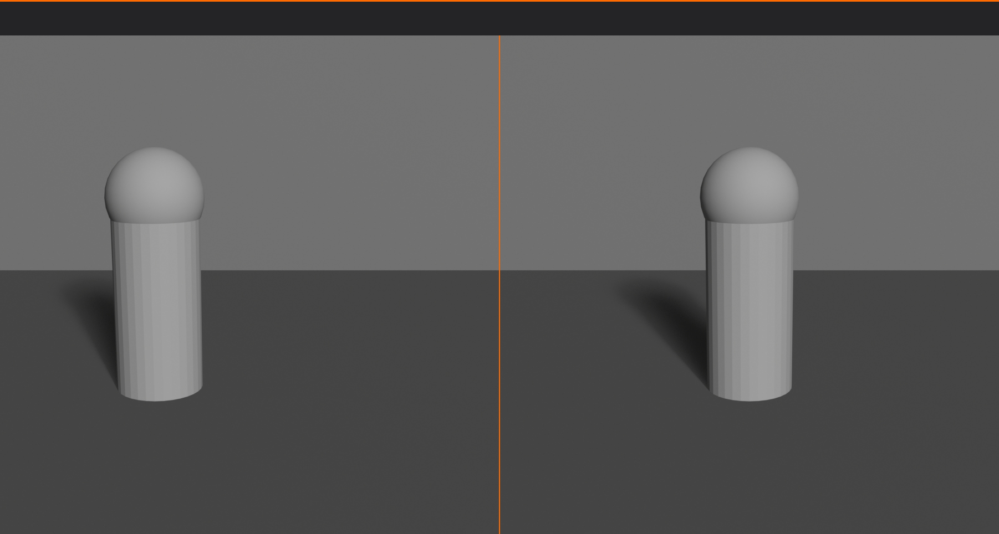
Rule of Thirds in Different Scenarios
🎬 Context-Specific Applications
Landscape scenes:
- Horizon on top or bottom line (never center)
- Tree, mountain, or focal point on vertical line
- Intersection points for sun, moon, building
- Creates depth and visual interest
Portrait/character shots:
- Eyes on top horizontal line or intersection
- Face along vertical line
- Looking space on opposite side
- Body can extend across frame but face follows rule
Product visualization:
- Product at intersection point
- Creates professional, dynamic presentation
- Allows room for branding, text, context
- More engaging than centered product
Architectural shots:
- Strong vertical lines (corners, columns) on vertical grid lines
- Ground plane on bottom horizontal
- Key features at intersection points
- Creates structure and clarity
Action/movement:
- Subject on third opposite to movement direction
- Creates lead room showing where they're going
- Implies motion and energy
- Path of action along grid lines
Multiple Subjects and the Rule of Thirds
👥 Handling Complexity
Two subjects:
- Place at opposite intersection points
- Left-top and right-bottom (or inverse)
- Creates diagonal relationship
- Balanced but dynamic
Three or more subjects:
- Primary subject on intersection
- Secondary subjects along lines
- Create triangular or flowing arrangement
- Maintain clear hierarchy
Subject groups:
- Treat group as single unit
- Place group mass on third
- Key member at intersection
- Balance with negative space
Rule of Thirds in Blender
🔧 Technical Implementation
Enabling rule of thirds guide:
- Select camera
- Camera Properties → Viewport Display
- Composition Guides → "Rule of Thirds"
- Grid overlays in camera view
- Use as positioning guide
Using the guide effectively:
- Position camera until subjects align with guides
- Use Lock Camera to View for intuitive adjustment
- Check in camera view (
Numpad 0) - Toggle guide on/off to see difference
- Turn off after composition is finalized
Workflow integration:
- Build scene with subjects
- Enable rule of thirds guide
- Position camera to align elements
- Fine-tune placement
- Disable guide for final render
Common Rule of Thirds Mistakes
⚠️ Pitfalls to Avoid
Mistake 1: Rigid adherence
- Problem: Forcing subjects onto grid when it doesn't work
- Solution: Use as guide, not law—break when needed
Mistake 2: Ignoring the whole frame
- Problem: Focusing only on where subject is, not whole composition
- Solution: Consider balance of entire frame, not just subject placement
Mistake 3: Wrong third for context
- Problem: Subject looking/moving into frame edge (no lead room)
- Solution: Place on third opposite to direction of gaze/movement
Mistake 4: Splitting attention
- Problem: Multiple strong elements at different intersections competing
- Solution: Clear hierarchy—one primary, others secondary
Mistake 5: Centering horizons
- Problem: Horizon line bisecting frame in middle
- Solution: Place horizon on top or bottom third (unless intentionally symmetrical)
Mistake 6: Using rule of thirds exclusively
- Problem: Every image follows same pattern
- Solution: Learn other principles—golden ratio, symmetry, etc.
When to Break the Rule of Thirds
🎭 Intentional Rule-Breaking
Valid reasons to center or break the rule:
- Symmetrical subjects:
- Architecture with perfect symmetry
- Reflections (mirror images)
- Formal, ceremonial scenes
- Centered composition reinforces symmetry
- Direct confrontation:
- Subject staring directly at camera
- Creates intensity and connection
- Portrait photography technique
- Centered subject commands attention
- Minimalist compositions:
- Single subject in vast space
- Isolation and loneliness
- Centered subject = emphasis on negative space
- Works when subject is small in frame
- Patterns and repetition:
- Repeating elements across frame
- Grid or matrix compositions
- Centered primary with symmetrical pattern
- Creates visual rhythm
- Dramatic effect:
- Intentional tension from breaking convention
- Uncomfortable, confrontational feeling
- Use sparingly for impact
- Requires strong reason
Key principle:
- Know the rule before breaking it
- Break intentionally, not accidentally
- Have clear artistic reason
- Rule-breaking should enhance, not confuse
✅ Rule of Thirds Checklist
Quick verification for your compositions:
- ✓ Main subject on intersection point or grid line?
- ✓ Horizon on top or bottom third (not centered)?
- ✓ Eyes (for characters) on top horizontal line?
- ✓ Looking/moving space in front of subject?
- ✓ Secondary elements balanced around frame?
- ✓ Nothing important cut by grid lines (unless intentional)?
- ✓ Overall balance feels right?
- ✓ If breaking rule, is there clear artistic reason?
💡 The Rule of Thirds is Training Wheels: Here's a secret—professional photographers and cinematographers don't consciously think about the rule of thirds every time they compose a shot. But they all learned it early, practiced it religiously, and internalized it so deeply that it became intuitive. The rule of thirds is like training wheels on a bicycle. It's not the ultimate goal—it's a tool that teaches you balance until you don't need to think about it anymore. Use it extensively as a beginner. You'll naturally start noticing when something should be centered for effect, or when a subject should be on the thirds, or when neither applies. The rule becomes a foundation, not a limitation. Master the rule, then transcend it.
✨ Golden Ratio and Divine Proportions
The golden ratio is nature's perfect proportion, found in everything from seashells to galaxies. It's the mathematical basis for visual harmony and has been used by artists for millennia. Let's explore this profound principle and how to apply it in your 3D compositions.
Understanding the Golden Ratio
📐 The Divine Proportion
What is the golden ratio?
- Mathematical proportion: approximately 1.618 (also called phi, φ)
- When a line is divided, shorter segment to longer segment equals longer segment to whole
- Formula: a/b = (a+b)/a = φ ≈ 1.618
- Found throughout nature, art, and architecture
Historical significance:
- Ancient Greece: Used in Parthenon design
- Renaissance: Leonardo da Vinci (Vitruvian Man), Michelangelo
- Nature: Nautilus shells, flower petals, galaxy spirals
- Modern design: Apple products, logos, layouts
- Called "divine proportion" due to perceived perfection
Why it works aesthetically:
- Creates natural, pleasing proportions
- Not quite symmetrical (1:1) but balanced
- Not arbitrary asymmetry but mathematical harmony
- Humans seem hardwired to find it beautiful
- Subconsciously satisfying even if ratio unknown
The Golden Spiral (Fibonacci Spiral)
🌀 Nature's Curve
What is the golden spiral?
- Logarithmic spiral based on golden ratio
- Grows by factor of φ with each quarter turn
- Closely related to Fibonacci sequence (1, 1, 2, 3, 5, 8, 13...)
- Creates elegant, natural-looking curve
Found in nature:
- Nautilus shell chambers
- Hurricane and galaxy spiral arms
- Sunflower seed arrangement
- Pine cone spirals
- Romanesco broccoli fractals
In composition:
- Guides eye in sweeping curve through image
- Creates natural flow and movement
- Focal point at spiral center (tight coil)
- Elements arranged along spiral path
- More sophisticated than rule of thirds
Using the golden spiral:
- Place focal point at spiral's inner coil
- Arrange supporting elements along spiral
- Eye follows curve naturally to subject
- Works for landscapes, portraits, products
- Can be flipped/rotated to fit composition
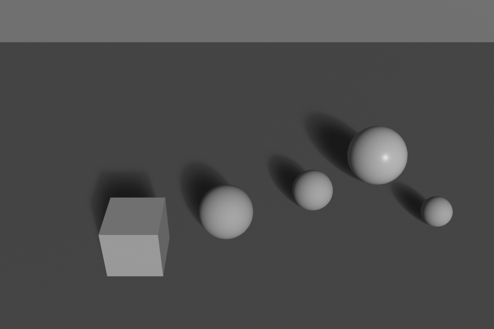
The Phi Grid (Golden Ratio Grid)
📏 Golden Ratio in Grid Form
What is the phi grid?
- Like rule of thirds but using golden ratio proportions
- Lines positioned at 1:1.618 ratio, not 1:1:1
- Creates four intersection points like rule of thirds
- More precise, mathematically perfect placement
Phi grid vs rule of thirds:
- Rule of thirds: Lines at 33.3% and 66.7%
- Phi grid: Lines at approximately 38.2% and 61.8%
- Very subtle difference (about 5%)
- Phi grid slightly more centered
- Both work well—difference often imperceptible
When to use phi grid:
- Fine art and high-end photography
- When seeking mathematical perfection
- Classical or timeless aesthetic
- Portraits and organic subjects
- When rule of thirds feels slightly off
Practical application:
- Use same principles as rule of thirds
- Place subjects at intersections or lines
- Horizon on horizontal phi line
- Creates slightly different feel—more refined
Golden Ratio in Blender
🔧 Technical Implementation
Enabling golden ratio guides:
- Camera Properties → Viewport Display → Composition Guides
- Options available:
- Golden: Phi grid (golden ratio grid)
- Golden Triangle A/B: Diagonal divisions
- Harmony A/B: Phi grid variations
- Overlays show in camera view
- Use as positioning reference
Golden ratio workflow:
- Enable "Harmony A" or "Golden" composition guide
- Position camera/subjects to align with guides
- Place focal point at intersection
- Arrange secondary elements along lines
- Fine-tune for perfect balance
- Compare with rule of thirds—notice subtle difference
Creating golden spiral overlay (advanced):
- Create custom image with golden spiral
- Add as background image to camera
- Use as composition reference
- Position subjects along spiral
- Remove background image before final render
Golden Ratio in Different Contexts
🎨 Versatile Applications
Portrait photography:
- Face placed on phi grid intersection
- Eyes on horizontal golden line
- Creates elegant, classical feel
- More refined than rule of thirds
Landscape compositions:
- Horizon on golden horizontal line
- Tree, mountain, or focal point on vertical line
- Path or river following golden spiral
- Natural, flowing arrangement
Product design and visualization:
- Product proportions based on golden ratio
- Frame composition using phi grid
- Creates premium, sophisticated feel
- Used extensively in luxury branding
Architectural scenes:
- Building proportions reflect golden ratio
- Compositional placement on phi grid
- Windows, doors sized with phi proportions
- Creates harmonious, balanced structures
Typography and layout:
- Font sizes scaled by golden ratio (16pt, 26pt, 42pt)
- Column widths based on phi
- Margins and spacing using golden proportions
- Works for text overlays in 3D scenes
Combining Golden Ratio with Other Principles
🔄 Integrated Approach
Golden ratio + rule of thirds:
- Use both as references
- Position between them when uncertain
- Creates range of acceptable placement
- Both work—choose by feel
Golden spiral + leading lines:
- Arrange lines to follow spiral path
- Roads, rivers, architectural elements
- Creates powerful directional flow
- Eye swept naturally to focal point
Phi grid + symmetry:
- Symmetrical elements on golden ratios
- Perfect balance without being centered
- Classical temple proportions
- Formal yet dynamic
✅ Golden Ratio Quick Guide
When to use golden ratio over rule of thirds:
- ✓ Fine art or gallery-quality work
- ✓ Classical, timeless aesthetic desired
- ✓ Organic, natural subjects (portraits, nature)
- ✓ When rule of thirds feels slightly wrong
- ✓ Premium, luxury product visualization
- ✓ Architectural or design-focused compositions
Stick with rule of thirds when:
- ✓ Quick commercial work
- ✓ Documentary or reportage style
- ✓ Learning composition basics
- ✓ Modern, dynamic aesthetic
- ✓ Action or movement emphasis
💡 The Mathematics of Beauty: The golden ratio proves that beauty has mathematical foundations. When you see a nautilus shell and find it beautiful, you're responding to the same proportion that makes the Parthenon majestic and da Vinci's paintings timeless. This isn't mystical—it's pattern recognition hardwired into human perception through millions of years of evolution. We evolved in a world where these proportions appear everywhere in nature, so we're predisposed to find them harmonious. As a 3D artist, you have the power to tap into this deep-seated aesthetic response. Use the golden ratio deliberately, and your work will resonate on an almost subliminal level with viewers, creating that ineffable quality of "rightness" that distinguishes truly great composition from merely adequate framing.
⚖️ Visual Weight and Balance
Not all elements in a composition have equal visual impact. Understanding visual weight—how "heavy" different elements feel—is crucial for creating balanced, harmonious compositions or intentional tension.
Understanding Visual Weight
🏋️ What Makes Something Visually Heavy
Visual weight defined:
- The perceived "heaviness" or prominence of an element
- How much an element attracts attention
- Not related to actual size or physical weight
- Psychological perception, not physics
Factors that increase visual weight:
- Size:
- Larger objects = heavier visually
- Takes more space = more attention
- Dominates composition
- Color intensity:
- Bright, saturated colors = heavy
- Dark, muted colors = lighter (paradoxically)
- Warm colors (red, orange) = heavier than cool (blue, green)
- Pure hues heavier than pastels
- Contrast:
- High contrast against background = heavy
- Black on white or white on black = maximum weight
- Low contrast = lighter weight
- Detail and texture:
- Complex, detailed areas = heavy
- Eye drawn to detail and complexity
- Simple, plain areas = lighter
- Isolation:
- Separated from other elements = heavier
- Stands out by being alone
- Grouped elements share weight
- Position:
- Top of frame = heavier (defies gravity)
- Bottom of frame = more stable, less heavy feel
- Center = naturally heavy
- Edges = lighter unless in tension
- Sharpness:
- Sharp focus = heavy
- Blurred = lighter
- Eye prioritizes sharp details
- Recognizable subjects:
- Faces = extremely heavy
- People/characters = heavy
- Abstract shapes = lighter
- Familiar objects = heavier than abstract
Types of Balance
⚖️ Achieving Equilibrium
Symmetrical balance (formal balance):
- Mirror image on either side of central axis
- Equal visual weight left and right (or top and bottom)
- Creates stability, formality, calm
- Characteristics:
- Predictable and orderly
- Traditional and classical feel
- Strong, authoritative
- Can feel static if overused
- Use for:
- Architecture (buildings, monuments)
- Formal portraits
- Religious or ceremonial subjects
- Product packaging
- Corporate/professional imagery
Asymmetrical balance (informal balance):
- Different elements on each side, but balanced visually
- Uses visual weight, not mirror placement
- More dynamic and interesting
- Characteristics:
- Active and energetic
- Modern and contemporary feel
- More complex to achieve
- Requires understanding of visual weight
- Example balance:
- Large light object on left = small dark object on right
- Detailed area on one side = simple area on other
- Multiple small elements = one large element
- Use for:
- Dynamic action scenes
- Editorial photography
- Modern design
- Storytelling imagery
- Most contemporary 3D work
Radial balance:
- Elements radiate from central point
- Like spokes on a wheel
- Symmetrical in circular pattern
- Characteristics:
- Strong focal point at center
- Dynamic movement outward
- Attention drawn to middle
- Use for:
- Mandalas and patterns
- Overhead shots (looking down)
- Flowers, wheels, circular objects
- Explosions or expansion effects
Crystallographic balance (mosaic balance):
- All-over pattern with no single focal point
- Equal visual weight distributed across entire frame
- Chaotic but controlled
- Use for:
- Abstract compositions
- Texture studies
- Wallpaper and pattern design
- Rarely used in storytelling
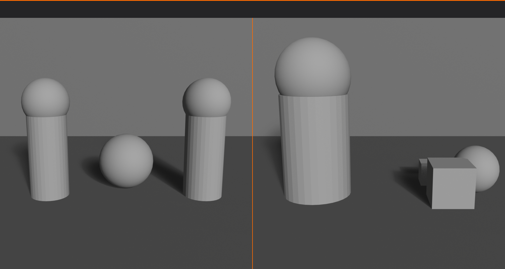
Balancing Visual Weight
🎯 Practical Balancing Techniques
The seesaw principle:
- Imagine composition as seesaw/balance scale
- Heavy element on one side needs counterbalance
- Distance from center affects leverage
- Small heavy object far from center = large light object close to center
Balancing strategies:
- Size compensation:
- Large element on left = several small elements on right
- Single large tree = multiple small flowers
- Big character = detailed environment opposite
- Color compensation:
- Bright saturated object = larger neutral area
- Small red element = large gray area
- Warm colors need less space than cool colors
- Complexity compensation:
- Detailed, busy area = simple, plain area
- Textured surface = smooth surface
- Multiple elements = negative space
- Tonal compensation:
- Dark area = bright area
- High contrast = low contrast
- Shadow = highlight
Testing balance:
- Squint at composition (reduces detail)
- Does one side feel heavier?
- Does image feel like it would "tip"?
- Convert to grayscale to see tonal balance
- Cover half—does remaining half feel complete or empty?
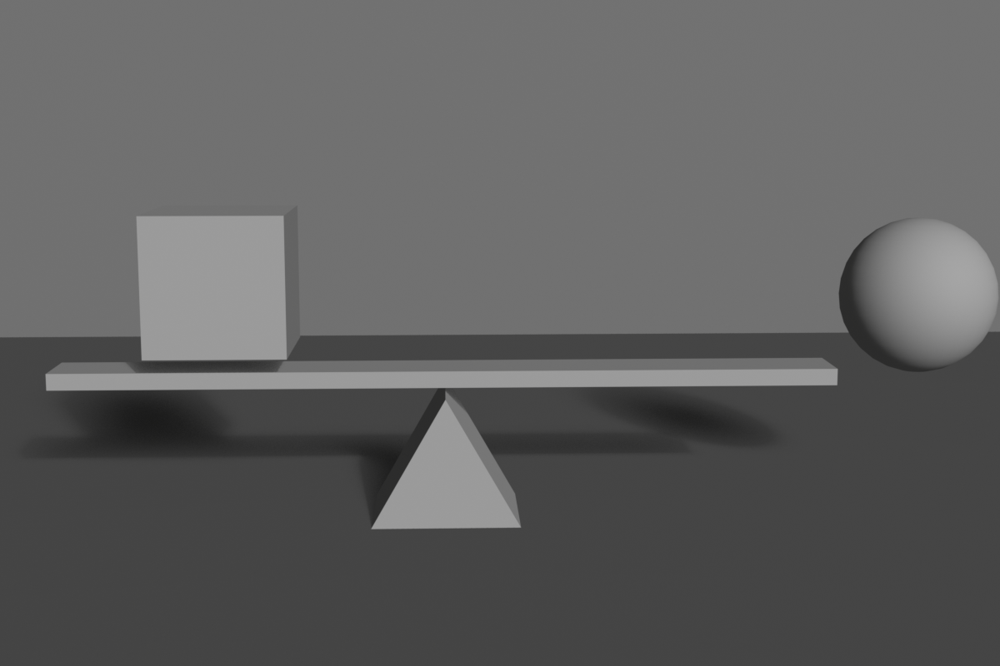
Intentional Imbalance
⚡ Using Tension Effectively
Why break balance?
- Creates visual tension and energy
- Suggests movement or change
- Builds anticipation
- Expresses chaos, conflict, instability
- Demands viewer attention through discomfort
Techniques for intentional imbalance:
- Heavy weight on one side:
- All elements clustered left or right
- Creates feeling of tipping
- Viewer subconsciously wants to balance
- Top-heavy compositions:
- Weight concentrated at top
- Feels unstable, precarious
- Creates anxiety or drama
- Extreme asymmetry:
- Subject pushed to extreme edge
- Vast negative space opposite
- Isolation and vulnerability
When to use imbalance:
- Action sequences (implies movement to restore balance)
- Horror or thriller imagery (discomfort)
- Character in conflict or danger
- Before/after transformation shots
- Disruption of normal state
Important caveat:
- Imbalance must be clearly intentional
- If it looks like mistake, it fails
- Usually requires exaggeration to be effective
- Should serve story/message, not be random
Visual Weight in Blender Scenes
🎨 Practical 3D Application
Controlling weight through materials:
- Bright, glossy materials = visually heavy
- Emissive materials = very heavy (glowing objects dominate)
- Rough, matte materials = lighter
- Transparency reduces visual weight
Controlling weight through lighting:
- Brightly lit areas = heavy
- Shadows = lighter
- Use lighting to guide attention
- Spotlight on subject increases its weight dramatically
Controlling weight through modeling:
- Detailed geometry = heavy (more visual interest)
- Simple primitives = lighter
- Add geometry where you want attention
- Simplify areas meant to recede
Balancing workflow:
- Position primary subject (heaviest element)
- Assess which side feels heavier
- Add counterbalancing elements
- Adjust sizes, brightness, detail
- Test in grayscale render
- Fine-tune until balanced (or intentionally imbalanced)
✅ Visual Weight Quick Check
Evaluate your composition:
- ✓ Squint test: Does one side dominate when details blur?
- ✓ Grayscale test: Convert to B&W—is tonal weight balanced?
- ✓ Cover test: Cover each half separately—both feel complete?
- ✓ Tipping test: Does image feel like it would fall to one side?
- ✓ Eye path: Does eye travel smoothly or get stuck in one area?
- ✓ If imbalanced: Is it clearly intentional and serving a purpose?
💡 Balance is Felt, Not Calculated: While you can analyze visual weight systematically, truly great compositions rely on intuition developed through practice. Professional artists don't consciously think "this red square has X visual weight, so I need Y amount of blue area"—they feel when something is off-balance and adjust naturally. This intuition comes from studying countless compositions and understanding why they work. Look at master paintings, award-winning photographs, beautifully composed films. Analyze what makes them balanced. Then, as you create your own compositions, pause frequently and ask: "Does this feel right?" Trust that feeling. Your brain processes visual weight automatically—you just need to learn to listen to what it's telling you.
➡️ Leading Lines and Flow
Lines are powerful compositional tools that guide the viewer's eye through your image. Understanding how to create and use leading lines transforms static images into visual journeys.
Understanding Leading Lines
🛤️ Visual Pathways
What are leading lines?
- Actual or implied lines that guide eye movement
- Direct attention toward focal point
- Create depth and perspective
- Establish visual flow through composition
Types of lines:
- Actual lines:
- Roads, paths, rivers
- Fences, railings, edges
- Cables, wires, poles
- Architectural elements (beams, columns)
- Clearly visible edges
- Implied lines:
- Gaze direction (where character looks)
- Pointing gestures
- Series of objects creating visual path
- Directional blur (motion)
- Alignment of elements
Why leading lines work:
- Human eye naturally follows lines
- Lines imply direction and movement
- Create sense of depth (converging perspective)
- Organize chaos into structure
- Control viewing sequence
Line Direction and Psychology
📐 Emotional Impact of Line Types
Horizontal lines:
- Feeling: Calm, stability, rest, peace
- Association: Horizon, lying down, landscape
- Effect: Slows eye movement, contemplative
- Use for: Serene landscapes, architecture, peaceful scenes
- Examples: Horizon lines, tabletops, floors, roads stretching away
Vertical lines:
- Feeling: Strength, power, growth, dignity
- Association: Standing, trees, buildings, authority
- Effect: Upward eye movement, impressive
- Use for: Powerful subjects, architecture, forest scenes
- Examples: Columns, tree trunks, skyscrapers, standing figures
Diagonal lines:
- Feeling: Dynamic, movement, energy, action
- Association: Falling, climbing, instability
- Effect: Rapid eye movement, excitement
- Use for: Action scenes, drama, visual interest
- Examples: Stairs, slopes, falling objects, tilted perspectives
- Special note:
- Ascending diagonals (lower-left to upper-right) = progress, positivity
- Descending diagonals (upper-left to lower-right) = decline, negativity
Curved lines:
- Feeling: Organic, graceful, flowing, natural
- Association: Nature, femininity, elegance
- Effect: Smooth eye movement, pleasant journey
- Use for: Natural scenes, portraits, organic subjects
- Examples: Winding paths, rivers, body curves, rolling hills
Zigzag/jagged lines:
- Feeling: Tension, chaos, danger, excitement
- Association: Lightning, broken glass, conflict
- Effect: Jarring, uncomfortable, energetic
- Use for: Action, danger, instability
- Examples: Lightning bolts, broken structures, aggressive angles
Converging lines:
- Feeling: Depth, distance, vanishing point
- Association: Perspective, infinity, journey
- Effect: Creates strong depth, draws eye to convergence point
- Use for: Depth emphasis, leading to subject, scale
- Examples: Railroad tracks, roads, hallways, rows of columns
Creating Effective Leading Lines
🎯 Implementing Line Strategy
Starting point strategy:
- Lines should enter frame from edges or corners
- Bottom corners are strongest entry points
- Top corners work for downward leading
- Avoid lines starting in middle (confusing)
Destination strategy:
- Lines should lead TO something important
- Converge on focal point or subject
- Multiple lines can lead to same destination
- Never lead eye out of frame (unless intentional)
Number of leading lines:
- Single line: Simple, direct, clear path
- Two lines: Creates channel or corridor
- Multiple lines: Complex but powerful convergence
- Too many competing lines = confusion
- Aim for 1-3 primary lines
Line strength:
- Strong lines:
- High contrast against background
- Clear, uninterrupted path
- Actual physical edges
- Use for primary directional control
- Subtle lines:
- Low contrast, implied
- Broken or interrupted
- Suggested by alignment
- Use for secondary flow
Common Leading Line Patterns
🗺️ Classic Line Compositions
The S-curve:
- Gentle S-shaped path through image
- Creates graceful, flowing journey
- Natural and pleasing to eye
- Examples: Winding road, river, path through landscape
- One of the most beautiful compositional patterns
The L-shape:
- Vertical element meeting horizontal element
- Creates frame within frame
- Anchors composition
- Examples: Tree trunk meeting ground, doorframe, window
The diagonal cross:
- Two diagonal lines intersecting
- Creates dynamic X shape
- Focal point at intersection
- Examples: Crossed swords, roof peaks, bridge cables
Parallel lines:
- Multiple lines running same direction
- Creates rhythm and pattern
- Emphasizes direction
- Examples: Stairs, fence posts, crop rows, columns
Radial lines:
- Lines emanating from or converging to center
- Strong focal point
- Dynamic energy
- Examples: Spokes, sunburst, tunnel view
Triangular flow:
- Three lines forming triangle
- Most stable geometric arrangement
- Natural eye path around triangle
- Examples: Mountain peaks, pyramids, implied connections between subjects
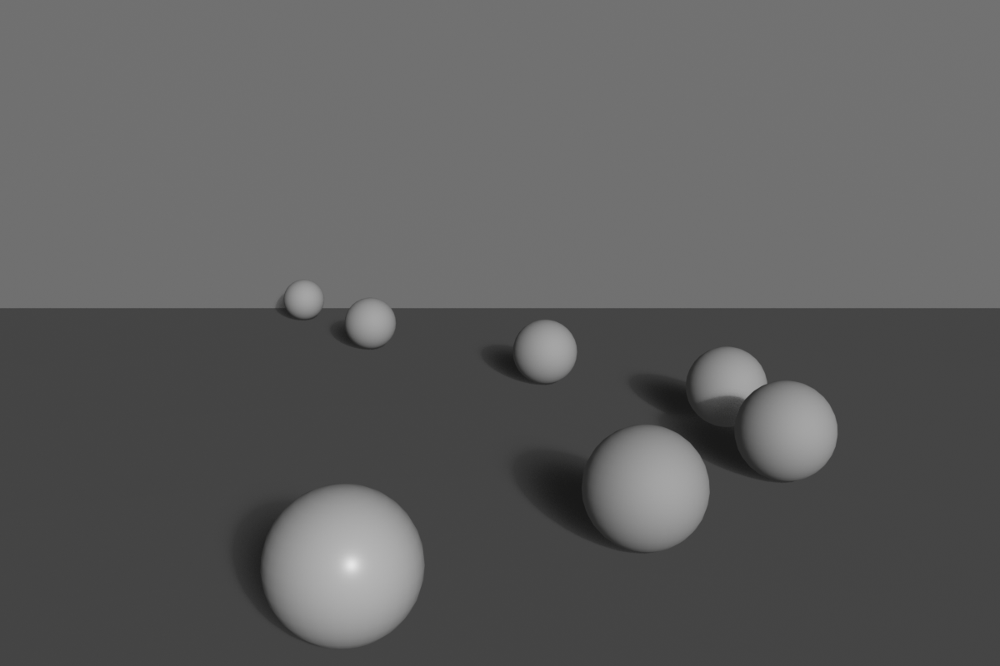
Leading Lines in 3D Scenes
🎨 Creating Lines in Blender
Using architectural elements:
- Floor tiles leading to subject
- Hallway walls converging
- Beam and column arrangements
- Stairway railings
- Window frames and doors
Using environmental elements:
- Paths and roads
- Rivers and streams
- Fallen logs or branches
- Rows of trees or plants
- Cloud formations
Using light and shadow:
- Light rays (godrays/volumetric light)
- Shadow edges
- Spotlight beams
- Gradient lighting creating direction
Using character elements:
- Gaze direction (where eyes look)
- Pointing gesture
- Body orientation
- Implied motion direction
Modeling for leading lines:
- Create clear edges and boundaries
- Position objects in linear arrangements
- Use array modifier for parallel lines
- Bezier curves for S-curve paths
- Align objects to create implied lines
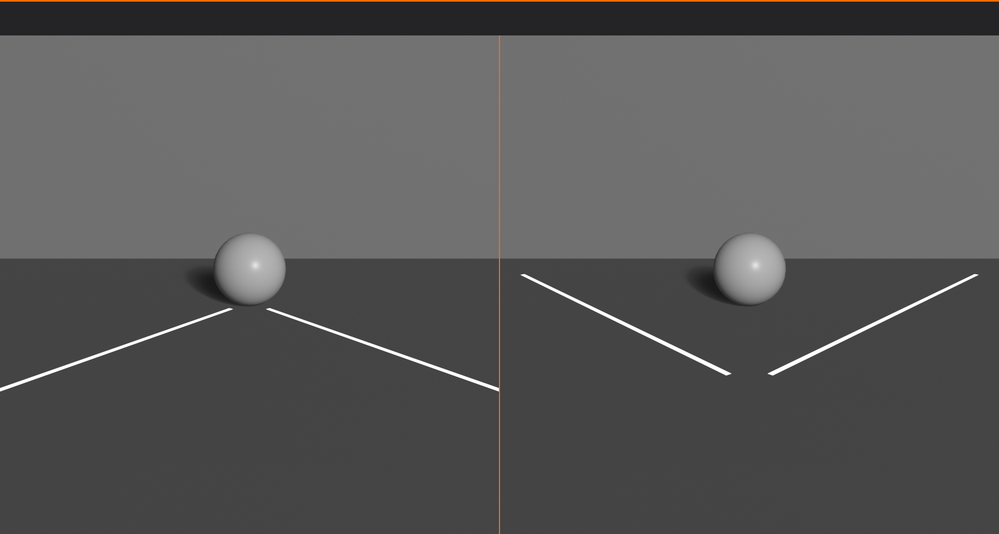
Pitfalls with Leading Lines
⚠️ Common Mistakes
Leading eye out of frame:
- Problem: Lines exit image without payoff
- Fix: Ensure lines lead TO subject, not away
- Exception: Intentionally showing journey beyond frame
Lines leading nowhere:
- Problem: Strong line but no focal point at end
- Fix: Place subject where lines converge
Competing lines:
- Problem: Multiple strong lines pulling different directions
- Fix: Establish hierarchy—one primary line, others supporting
Bisecting frame:
- Problem: Strong horizontal/vertical line splitting image in half
- Fix: Follow rule of thirds—place line off-center
- Exception: Intentional symmetry
Tangent lines:
- Problem: Lines barely touching subject (awkward intersection)
- Fix: Either clearly separate or clearly intersect—avoid "almost"
Overly complex paths:
- Problem: Too many twists and turns, eye gets lost
- Fix: Simplify to clear, readable path
✅ Leading Lines Checklist
Verify your line composition:
- ✓ Do lines enter from frame edges/corners?
- ✓ Do lines lead TO the focal point?
- ✓ Is there a clear primary line (not competing directions)?
- ✓ Does eye movement feel natural and smooth?
- ✓ Do converging lines meet at subject?
- ✓ Are horizons/major lines off-center (rule of thirds)?
- ✓ Do line emotions match scene intent (calm/dynamic/etc)?
- ✓ Are there 1-3 primary lines (not too many)?
💡 Lines Tell the Story of the Journey: Every great composition is a journey for the viewer's eye, and leading lines are the roads that make that journey clear and compelling. Think of yourself as a tour guide—you're not just showing people a destination (the focal point), you're creating the experience of getting there. A winding S-curve path is a leisurely stroll through a landscape. Dramatic diagonal lines are a sprint to an action climax. Converging perspective lines are a deliberate march toward an important subject. The path you create through leading lines is as important as the destination itself. Master leading lines, and you transform from someone who merely places objects in a frame to someone who choreographs visual experiences.
🖼️ Framing Within Frames
Framing is a powerful technique where you use elements within your scene to create secondary frames around your subject. This ancient compositional device directs attention, adds depth, and creates visual interest.
Understanding Internal Framing
🎭 Frame Within a Frame
What is internal framing?
- Using scene elements to create frame around subject
- Natural vignette that draws focus
- Adds layers and depth to composition
- Contextualizes subject within environment
Why framing works:
- Directs attention:
- Eye naturally drawn to framed area
- Creates clear focal point
- Isolates subject from distractions
- Adds depth:
- Creates foreground, middle ground, background layers
- Emphasizes three-dimensional space
- Prevents flat-looking compositions
- Provides context:
- Shows relationship between subject and environment
- Tells story about location
- Adds narrative information
- Creates interest:
- More dynamic than plain framing
- Adds architectural or natural beauty
- Professional, sophisticated look
Types of Natural Frames
🚪 Common Framing Elements
Architectural frames:
- Doorways and arches:
- Classic framing device
- Rectangular or arched opening
- Subject visible through opening
- Creates depth and mystery
- Windows:
- Looking through window at subject
- Can show interior or exterior scene
- Window panes create grid subdivision
- Adds voyeuristic or intimate quality
- Columns and pillars:
- Vertical framing elements
- Subject between columns
- Creates classical, formal feel
- Emphasizes grandeur and scale
- Hallways and corridors:
- Tunnel effect
- Leading lines + framing combined
- Strong perspective depth
- Subject at end of corridor
Natural frames:
- Tree branches:
- Overhanging branches frame top of image
- Creates organic, natural border
- Often used in landscape photography
- Adds foreground interest
- Cave or rock openings:
- Looking out from dark space to light
- Strong silhouette frame
- Dramatic contrast
- Sense of discovery
- Foliage tunnels:
- Trees forming natural archway
- Path through forest
- Creates magical, inviting atmosphere
Object-based frames:
- Mirrors and reflections:
- Subject seen in mirror frame
- Self-referential composition
- Can show subject and reflection simultaneously
- Vehicles:
- View through car windshield
- Train or bus window
- Creates sense of journey
- Furniture:
- Chair backs, table legs
- Bookshelves creating grid
- Bed frame, curtains
Shadow and light frames:
- Pools of light creating natural vignette
- Shadow patterns framing bright areas
- Spotlight creating circular frame
- Window light creating rectangular frame on wall
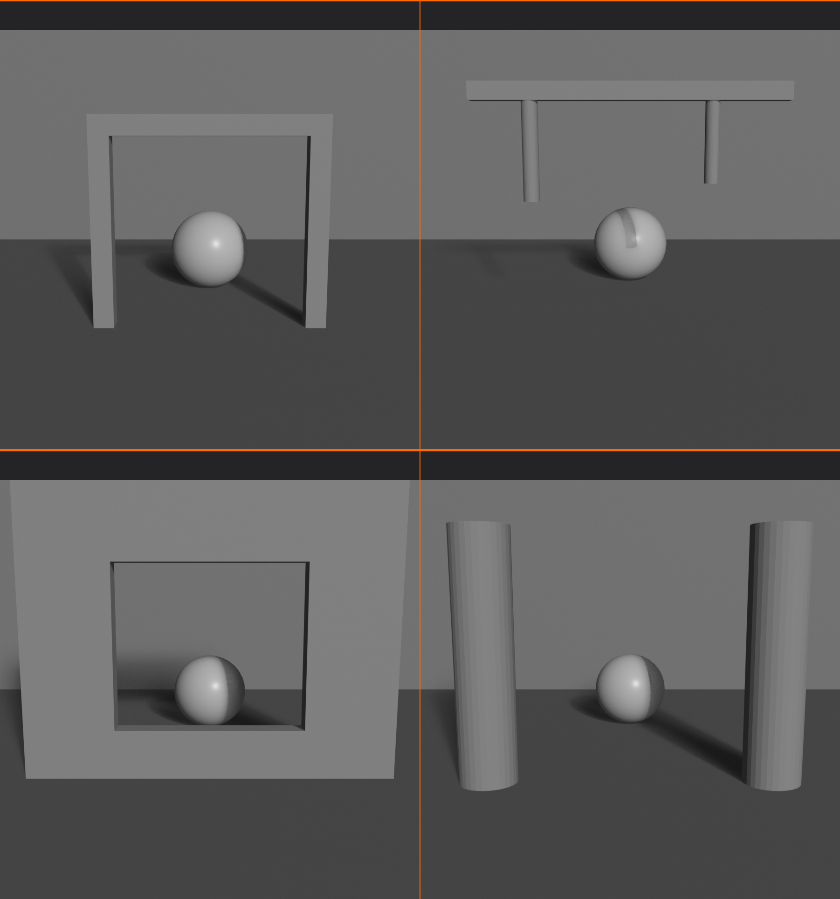
Framing Techniques
🎨 Implementation Strategies
Full frame:
- Frame completely surrounds subject
- Strongest, most obvious framing
- Door frame, window, arch
- Subject centered or off-center within frame
Partial frame:
- Frame elements on one or two sides only
- More subtle, less confining
- Tree on left, cliff on right
- Still directs attention without boxing in
Layered frames:
- Multiple frames at different depths
- Foreground frame, then another, then subject
- Creates extreme depth
- Example: Through doorway, through another doorway, to subject
Asymmetrical frames:
- Frame heavier on one side
- Creates visual weight and direction
- More dynamic than centered frame
- Tree branches heavy on left, open on right
Focus depth framing:
- Foreground elements out of focus
- Creates soft, blurred frame
- Romantic, dreamy quality
- Separates subject from distracting foreground
Framing in Blender
🔧 Creating Frames in 3D
Modeling frames:
- Architectural elements:
- Model doorways, windows, arches
- Position camera to shoot through opening
- Ensure frame edges are in camera view
- Natural elements:
- Add tree branches using curves or particle systems
- Position to overhang top of frame
- Rock formations creating cave opening
- Object placement:
- Position furniture or objects as frame edges
- Columns flanking subject
- Curtains on sides of frame
Using depth of field:
- Place framing objects in foreground
- Enable depth of field on camera
- Focus on subject (background)
- Foreground frame becomes soft, blurred
- Creates professional, cinematic look
Lighting for frames:
- Darken frame elements (silhouette)
- Brighten subject area
- Creates natural vignette
- Use area lights positioned to create light frame patterns
Camera positioning:
- Position camera behind or beside frame elements
- Adjust focal length to include frame + subject
- Use wider angle (24-35mm) to capture both
- Ensure frame doesn't cut off awkwardly
Common Framing Mistakes
⚠️ Pitfalls to Avoid
Frame too prominent:
- Problem: Frame elements overshadow subject
- Fix: Reduce frame contrast, blur foreground, or simplify frame
Awkward cutoffs:
- Problem: Frame elements cut off at weird points
- Fix: Include complete frame or cut well past it—avoid partial/tangent
Competing frames:
- Problem: Multiple frames creating confusion
- Fix: One clear primary frame
Blocking the subject:
- Problem: Frame elements obscure important parts of subject
- Fix: Adjust camera angle or frame position
Forced framing:
- Problem: Frame feels artificial or unnecessary
- Fix: Only frame when it adds value—not required for every shot
💡 Frames Within Frames: The Russian Nesting Doll Effect: Great cinematographers love framing because it creates visual layers—the outer frame (your camera frame), then internal frames (doorways, windows, arches), leading to your subject. Each layer adds depth and guides the viewer deeper into the image. It's like a Russian nesting doll—each frame opens to reveal another, creating anticipation and focus. When you watch classic films, notice how often directors use doorways and windows. They're not just showing you a subject—they're creating a journey through space, from outside to inside, from your world into the scene. Framing transforms flat screens into portals with depth and dimension.
⚖️ Symmetry and Asymmetry
Symmetry and asymmetry represent two fundamental approaches to composition. Understanding when and how to use each gives you powerful control over the mood and impact of your images.
Understanding Symmetry
🔄 Mirror Perfect Balance
What is symmetry in composition?
- Mirror image arrangement across central axis
- Left side reflects right side (or top reflects bottom)
- Perfect or near-perfect balance
- Creates formal, ordered feel
Types of symmetry:
- Bilateral (reflective) symmetry:
- Most common type
- Left-right mirror image
- Vertical axis down center
- Example: Face, building facade, butterfly
- Vertical symmetry:
- Top-bottom mirror
- Horizontal axis through middle
- Less common than bilateral
- Example: Reflection in water
- Radial symmetry:
- Elements arranged around central point
- Like spokes on wheel
- Rotational balance
- Example: Flowers, mandalas, domes viewed from below
Psychological impact of symmetry:
- Stability: Feels grounded and secure
- Formality: Professional, ceremonial, important
- Calm: Peaceful, orderly, controlled
- Perfection: Idealized, pristine, intentional
- Authority: Commanding, powerful, official
- Timeless: Classical rather than contemporary
When to use symmetry:
- Architecture and buildings
- Formal portraits (direct gaze at camera)
- Religious or ceremonial subjects
- Product photography (especially luxury items)
- Patterns and mandalas
- Reflections (water, mirrors)
- When conveying perfection, order, authority
Creating Effective Symmetrical Compositions
🎯 Symmetry Best Practices
Perfect vs approximate symmetry:
- Perfect symmetry:
- Exact mirror match
- Can feel artificial or sterile
- Use for maximum formality
- Approximate symmetry:
- Nearly symmetrical with small variations
- More natural and engaging
- Breaks monotony while maintaining balance
- Often preferred
Central axis placement:
- Axis should be obvious and intentional
- Usually vertical through center of frame
- Subject centered on axis
- Off-center axis disrupts symmetry (usually bad)
Breaking symmetry intentionally:
- Small asymmetrical element in symmetrical composition
- Draws attention to the difference
- Creates focal point through disruption
- One person standing while others sit
- Single red rose in symmetrical garden
Symmetry + depth:
- Combine symmetrical framing with depth of field
- Symmetrical architecture with off-center subject
- Symmetrical foreground, asymmetrical background
- Adds complexity to potentially static composition
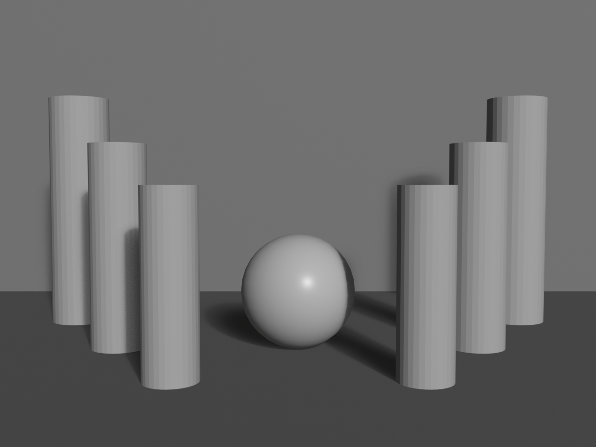
Understanding Asymmetry
⚡ Dynamic Imbalance
What is asymmetry in composition?
- Unequal distribution of visual elements
- No mirror image or central balance
- Balanced through visual weight, not position
- More common in contemporary imagery
Psychological impact of asymmetry:
- Dynamic: Active, energetic, movement
- Informal: Casual, approachable, relaxed
- Modern: Contemporary, progressive feel
- Natural: Organic, real-world (nature is rarely symmetrical)
- Interesting: Demands attention, less predictable
- Tension: Slight unease that creates engagement
When to use asymmetry:
- Action and movement
- Candid, documentary photography
- Natural landscapes
- Contemporary, artistic work
- Environmental portraits
- Storytelling (most narratives)
- When conveying energy, change, naturalism
Creating Effective Asymmetrical Compositions
🎨 Asymmetry Techniques
Rule of thirds as asymmetry:
- Rule of thirds is asymmetrical composition
- Subject off-center creates dynamic balance
- Negative space balances positive space
- Foundation of most asymmetrical work
Visual weight balancing:
- Large light element = small dark element
- Complex busy area = simple plain area
- One large subject = multiple small subjects
- Asymmetrical placement, balanced weight
Directional balance:
- Subject looking/moving one direction
- Space in front (leading room)
- Weight of implied motion balances composition
- Viewer anticipates what's ahead
Triangular compositions:
- Three points of interest forming triangle
- Inherently asymmetrical
- Eye travels around triangle
- Very stable despite asymmetry
Diagonal dynamics:
- Diagonal lines create asymmetry
- More energetic than horizontal/vertical
- Ascending vs descending diagonals
- Balanced asymmetrically through weight distribution
Symmetry vs Asymmetry: Choosing
🤔 Decision Framework
Choose symmetry when:
- Subject is naturally symmetrical (architecture, faces)
- You want formal, authoritative feel
- Creating sense of perfection or idealism
- Religious, ceremonial, or official imagery
- Emphasizing pattern or repetition
- Working with reflections
- You want calm, stable, timeless quality
Choose asymmetry when:
- Subject is in motion or action
- You want dynamic, energetic feel
- Creating naturalistic, candid imagery
- Contemporary or artistic aesthetic
- Telling a story (narratives are rarely symmetrical)
- You want viewer engagement through tension
- Modern, progressive quality desired
Hybrid approach:
- Symmetrical structure with asymmetrical details
- Asymmetrical framing of symmetrical subject
- Gives both stability and interest
- Often best of both worlds
Symmetry and Asymmetry in Blender
🔧 Technical Implementation
Creating symmetry:
- Modeling:
- Use Mirror modifier for perfect symmetry
- Array modifier for radial symmetry
- Duplicate and mirror for architectural elements
- Camera placement:
- Center camera on subject's symmetry axis
- Use orthographic view to check alignment
- Enable grid overlays to verify centering
- Lighting:
- Symmetrical light placement reinforces symmetry
- Or use asymmetrical lighting on symmetrical subject for interest
Creating asymmetry:
- Use rule of thirds composition guides
- Position camera off-center to subject
- Vary object sizes and positions
- Asymmetrical lighting creates drama
- Random scatter for natural asymmetry
Breaking symmetry in post:
- Crop to off-center even if rendered symmetrically
- Adjust vignetting to favor one side
- Color grade one side differently
- Add asymmetrical overlay elements
✅ Symmetry/Asymmetry Quick Guide
For symmetrical compositions:
- ✓ Perfect centering on axis
- ✓ Subject gazing directly at camera (not looking off)
- ✓ Equal weight left and right
- ✓ Consider breaking symmetry with one small element
- ✓ Formal, authoritative posture/presentation
For asymmetrical compositions:
- ✓ Follow rule of thirds or golden ratio
- ✓ Balance visual weight, not position
- ✓ Include negative space for breathing room
- ✓ Lead room in direction of gaze/movement
- ✓ Vary element sizes and positions
💡 Symmetry: The Power and the Risk: Symmetry is like a double-edged sword—incredibly powerful when used correctly, but potentially boring when overused. Perfect symmetry commands attention and conveys authority, which is why it's used in religious architecture, government buildings, and corporate logos. But it's also predictable. Once the viewer sees one half, they know exactly what the other half looks like. This is why even in symmetrical compositions, the masters introduce subtle variations—a shifted eye position in a portrait, a single flower out of place in a garden, one figure breaking from a symmetrical group. These intentional "mistakes" give the eye something to discover within the order. When you compose symmetrically, honor the symmetry enough to make it clear and intentional, but break it just enough to keep it interesting.
🌄 Depth and Layering
Creating depth is crucial in 3D rendering—ironically, since you're working in three dimensions but displaying on a flat screen. Layering techniques transform flat images into immersive scenes with clear spatial relationships.
Understanding Depth in Composition
📏 The Illusion of Space
Why depth matters:
- 2D display (screen) needs depth cues to feel 3D
- Separates amateur flat shots from professional dimensional images
- Creates immersion and realism
- Establishes scale and spatial relationships
- Guides eye through space
The three planes:
- Foreground:
- Closest to camera
- Often used for framing
- Can be blurred (depth of field)
- Establishes immediate space
- Middle ground:
- Where main subject usually lives
- Primary focus and sharpness
- Where story happens
- Most important compositional area
- Background:
- Farthest from camera
- Provides context and atmosphere
- Can be blurred or simplified
- Supports middle ground
Effective depth = visible separation between planes:
- All three planes shouldn't blend together
- Clear distinction creates dimensionality
- Use multiple techniques to enhance separation
Techniques for Creating Depth
🎨 Depth Creation Strategies
1. Overlapping elements:
- Objects partially obscuring others
- Brain interprets overlap as depth
- Closest object in front, overlapped object behind
- Simple but powerful cue
- Implementation:
- Position objects at different distances from camera
- Ensure visible overlap in camera view
- Tree in foreground partially hiding house
2. Size variation (perspective):
- Farther objects appear smaller
- Same-size objects at different distances show depth
- Natural perspective effect
- Implementation:
- Array of similar objects (trees, people, posts)
- Receding into distance
- Clear size gradient
3. Atmospheric perspective (aerial perspective):
- Distant objects hazier, lower contrast, bluer
- Atmospheric particles scatter light
- Natural depth cue from real world
- Implementation in Blender:
- Use Mist/Fog in World settings
- Volumetric lighting/fog
- Decrease contrast on distant objects
- Add slight blue tint to background
4. Detail gradient:
- Foreground = high detail and texture
- Background = less detail and texture
- Eye assumes detailed = close, simple = far
- Implementation:
- More geometry/subdivision in foreground
- Simpler models in background
- Detailed textures near camera
- Lower resolution textures on distant objects
5. Depth of field (focus):
- Selective focus on one depth plane
- Blurred foreground and/or background
- Powerful separation technique
- Implementation:
- Enable camera depth of field
- Set focus distance to subject
- Adjust f-stop for blur amount
- Covered in detail in Lesson 22
6. Light and shadow:
- Different lighting on different planes
- Shadows cast from foreground onto middle/background
- Creates clear spatial relationships
- Implementation:
- Bright subject, darker foreground/background
- Godrays/volumetric light creating layers
- Shadow patterns showing depth
7. Color separation:
- Different color temperatures per layer
- Warm foreground, cool background (or vice versa)
- Creates visual separation
- Implementation:
- Warm rim light on foreground elements
- Cool ambient background lighting
- Color grading to enhance separation
8. Leading lines to depth:
- Converging perspective lines
- Paths, roads, rivers leading into distance
- Creates sense of journey through space
- Implementation:
- Roads/paths starting in foreground
- Leading to background
- Linear perspective naturally shows depth
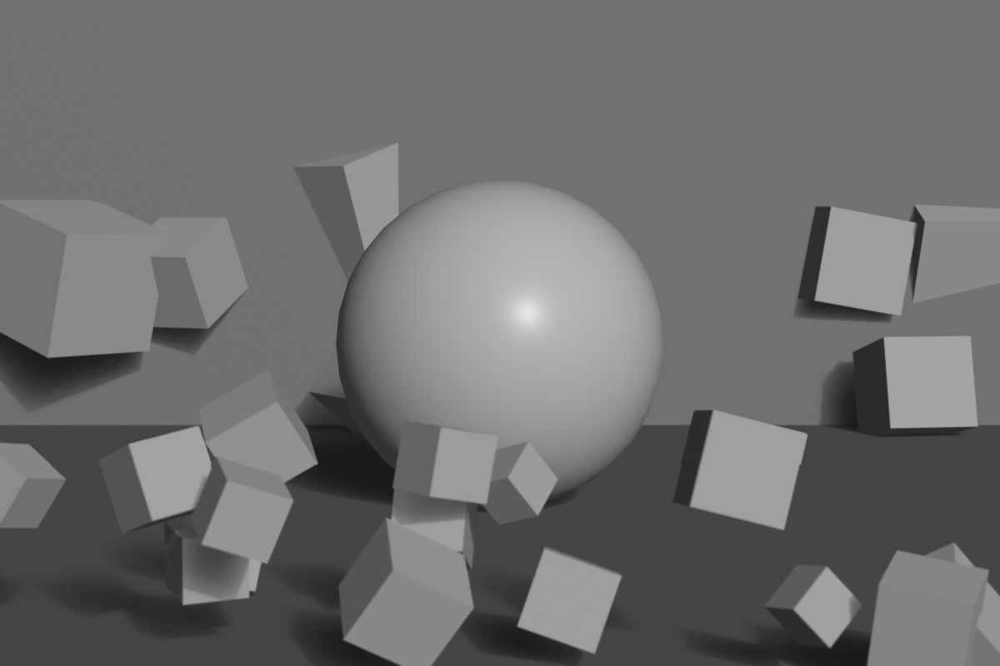
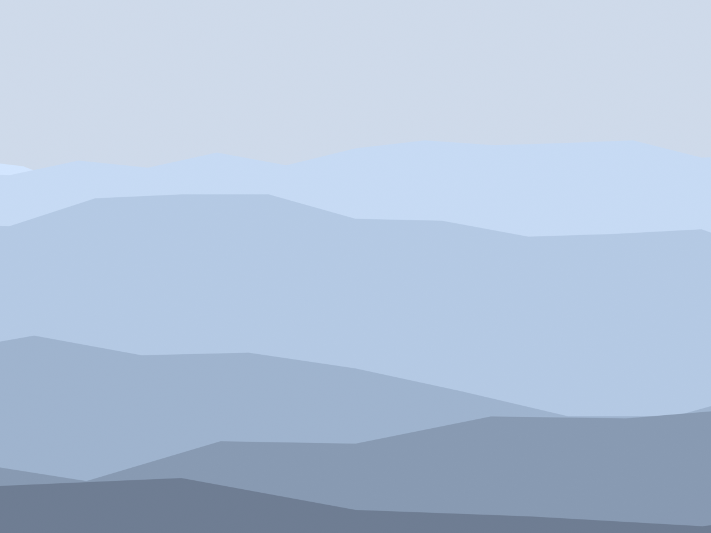
Layering Strategies
🗂️ Building Dimensional Compositions
The three-layer rule:
- Always try to include foreground, middle, background
- Even simple scenes benefit from layering
- Prevents flat, two-dimensional feel
- Not always possible but aim for it
Foreground strategies:
- Framing elements:
- Tree branches, doorways, architectural elements
- Partially frame subject
- Often blurred with shallow depth of field
- Leading elements:
- Path, road, river starting near camera
- Guides eye into scene
- Creates entry point
- Scale reference:
- Object of known size in foreground
- Establishes scale for rest of scene
- Person, vehicle, furniture
Middle ground strategies:
- Primary subject placement
- Sharpest focus
- Highest detail
- Where story action occurs
- Most viewer attention
Background strategies:
- Context provider:
- Sky, landscape, city skyline
- Sets location and mood
- Shouldn't compete with subject
- Atmospheric support:
- Mountains fading in distance
- Hazy cityscape
- Sky with clouds
- Creates sense of vast space
- Negative space:
- Simple, uncluttered background
- Emphasizes subject by contrast
- Sky, plain wall, gradient
Layer balance:
- All layers shouldn't compete equally
- One layer dominant (usually middle ground)
- Others support without distracting
- Use contrast, detail, focus to prioritize
Depth in Different Focal Lengths
🔍 Focal Length Effects on Depth
Wide-angle (18-35mm):
- Exaggerates depth
- Foreground appears very close
- Background appears far away
- Strong perspective lines
- Dramatic sense of space
- Best for: Emphasizing vast depth, environmental storytelling
Normal (40-55mm):
- Natural depth perception
- Mimics human vision
- Balanced depth representation
- Neither exaggerated nor compressed
- Best for: Realistic depth, general scenes
Telephoto (85mm+):
- Compresses depth
- Foreground and background appear closer together
- Layers stack more tightly
- Less sense of deep space
- Best for: Flattening busy backgrounds, portrait isolation
Choosing for depth effect:
- Want to emphasize depth? → Wide-angle
- Want natural depth? → Normal focal length
- Want to compress space? → Telephoto
- Match focal length to depth intention
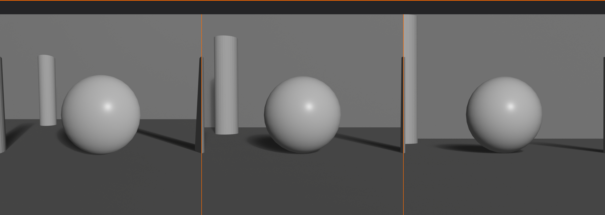
Depth in Blender Workflow
🔧 Practical Implementation
Scene setup for depth:
- Plan your layers:
- Decide what goes in foreground, middle, background
- Sketch or plan before modeling
- Position strategically:
- Space objects at different distances from camera
- Ensure visible overlap
- Check from camera view frequently
- Add atmospheric effects:
- World settings → Mist Pass
- Or Shader Editor → Volume Scatter for fog
- Start subtle, increase if needed
- Level of detail optimization:
- High subdivision on foreground/middle ground
- Lower subdivision on background
- Detailed textures near camera
- Simpler textures far away
- Lighting for depth:
- Different lighting intensity per layer
- Rim lights on foreground
- Main light on middle ground subject
- Ambient background lighting
- Enable depth of field:
- Camera Properties → Depth of Field
- Focus on middle ground subject
- Adjust f-stop to taste
Testing depth effectiveness:
- Render test shot
- Can you clearly distinguish three layers?
- Does image feel dimensional or flat?
- Squint—do layers separate tonally?
- Adjust if layers blend together
Common Depth Mistakes
⚠️ Avoiding Flatness
All elements on same plane:
- Problem: Everything equidistant from camera (flat)
- Fix: Vary Z-depth, stagger positions
No foreground:
- Problem: Scene starts at subject, no entry point
- Fix: Add foreground element, even if just framing
Empty or boring background:
- Problem: Flat color or void behind subject
- Fix: Add environmental context or interesting sky
Competing layers:
- Problem: Background too detailed, fights with subject
- Fix: Blur, simplify, or de-saturate background
No depth cues:
- Problem: No overlap, no size variation, no atmospheric perspective
- Fix: Apply at least 2-3 depth techniques
Over-reliance on one technique:
- Problem: Only using DoF or only using fog
- Fix: Combine multiple depth cues for strongest effect
✅ Depth Checklist
Verify dimensional quality:
- ✓ Can you identify three distinct layers (foreground, middle, background)?
- ✓ Are objects overlapping to show depth?
- ✓ Is there size variation suggesting distance?
- ✓ Are depth cues present (atmospheric perspective, detail gradient)?
- ✓ Does depth of field separate planes?
- ✓ Do lighting and shadow reinforce spatial relationships?
- ✓ Is focal length appropriate for desired depth effect?
- ✓ Does composition feel dimensional, not flat?
💡 Depth is What Makes 3D Worth It: Here's an irony—you work in 3D software with full dimensional control, but your final output is a 2D image on a flat screen. The challenge is making that flat screen convey the depth you created. This is where composition becomes critical. Every technique you use to create depth—layering, atmospheric perspective, depth of field, overlapping—is translating your 3D world into 2D language that viewers understand. When someone looks at your render and feels like they could step into the scene, walk around the objects, reach out and touch the surfaces—that's when you've succeeded. Depth isn't just a technical goal; it's the bridge between your 3D creation and the viewer's 2D experience. Master depth, and you make flat screens come alive.
🎨 Color in Composition
Color is one of the most powerful compositional tools at your disposal. It affects emotion, guides attention, creates harmony or tension, and can make or break a composition. Let's explore how to use color deliberately in your compositions.
Color as Compositional Element
🌈 Beyond Decoration
How color affects composition:
- Attracts attention:
- Bright, saturated colors draw eye immediately
- Can be used to create focal points
- Warm colors (red, orange, yellow) advance visually
- Cool colors (blue, green, purple) recede
- Creates visual weight:
- Saturated colors = heavy
- Muted colors = light
- Affects balance of composition
- Small bright element can balance large neutral area
- Establishes mood:
- Warm palette = energetic, passionate, aggressive
- Cool palette = calm, melancholic, professional
- Desaturated = serious, somber, realistic
- Saturated = vibrant, fantastical, optimistic
- Creates unity:
- Limited color palette ties elements together
- Consistent color temperature creates harmony
- Repeated accent color throughout composition
Color Harmony Schemes
🎭 Proven Color Combinations
Monochromatic:
- Single hue with different values (light/dark) and saturation
- Creates unity and sophistication
- Can feel limited but very cohesive
- Use for: Minimalist, elegant, focused compositions
- Example: Various shades of blue from navy to light blue
Analogous:
- Colors adjacent on color wheel (e.g., blue, blue-green, green)
- Natural, harmonious feel
- Low contrast, comfortable viewing
- Use for: Serene, natural scenes; landscapes; peaceful mood
- Example: Sunset (red, orange, yellow) or forest (yellow-green, green, blue-green)
Complementary:
- Colors opposite on color wheel (e.g., blue and orange)
- High contrast, vibrant, energetic
- Each color makes other appear more intense
- Use for: Dynamic, attention-grabbing compositions; clear focal points
- Example: Blue sky with orange sunset; teal shadows with warm highlights
- Classic pairs: Red/Green, Blue/Orange, Yellow/Purple
Split-complementary:
- Base color plus two colors adjacent to its complement
- Softer than complementary but still vibrant
- More variety, easier to use than pure complementary
- Use for: Balanced contrast without harshness
- Example: Blue with red-orange and yellow-orange
Triadic:
- Three colors equally spaced on color wheel
- Balanced, vibrant, playful
- Use one as dominant, others as accents
- Use for: Colorful, energetic scenes; children's content; fantasy
- Example: Primary colors (red, yellow, blue) or secondary (orange, green, purple)
Tetradic (double-complementary):
- Two complementary pairs
- Maximum variety and richness
- Hard to balance—needs careful dominant/accent distribution
- Use for: Complex, rich palettes; experienced users
Color Temperature
🌡️ Warm vs Cool
Understanding temperature:
- Warm colors: Red, orange, yellow, warm whites
- Cool colors: Blue, cyan, green, cool whites/grays
- Temperature is relative (green can be warm or cool depending on context)
Temperature psychology:
- Warm:
- Energetic, passionate, aggressive, inviting
- Advances toward viewer
- Appears closer than it is
- Associated with fire, sun, heat
- Cool:
- Calm, professional, sad, distant
- Recedes from viewer
- Appears farther than it is
- Associated with water, ice, sky
Temperature contrast (warm/cool split):
- Most effective color technique in cinematography
- Warm light on subject, cool shadows (or vice versa)
- Creates depth and dimensionality
- Separates subject from background
- Classic example: Orange/teal look in modern films
- Implementation:
- Warm key light (sun, fire)
- Cool fill/ambient (sky, window light)
- Or inverse for nighttime scenes
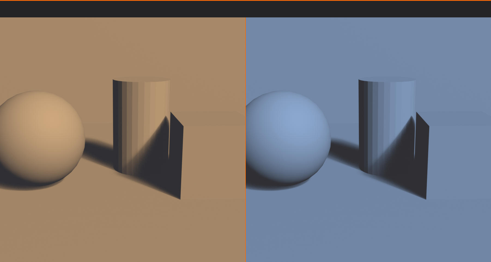
Color as Focal Point
🎯 Using Color to Direct Attention
Color accent technique:
- Mostly muted/neutral colors
- One small saturated color accent
- Eye immediately drawn to accent
- Powerful focal point creation
Examples:
- Girl in red coat in black-and-white scene (Schindler's List)
- Single red rose in grayscale environment
- Bright yellow umbrella in desaturated rainy street
- Neon sign in dim noir cityscape
Implementation strategy:
- Choose one accent color for focal point
- Desaturate or neutralize everything else
- Accent should be small but intense
- Works because of extreme contrast
Color isolation in color scene:
- Don't need black-and-white background
- Use complementary colors
- One dominant color, one small accent of complement
- Blue scene with small orange element
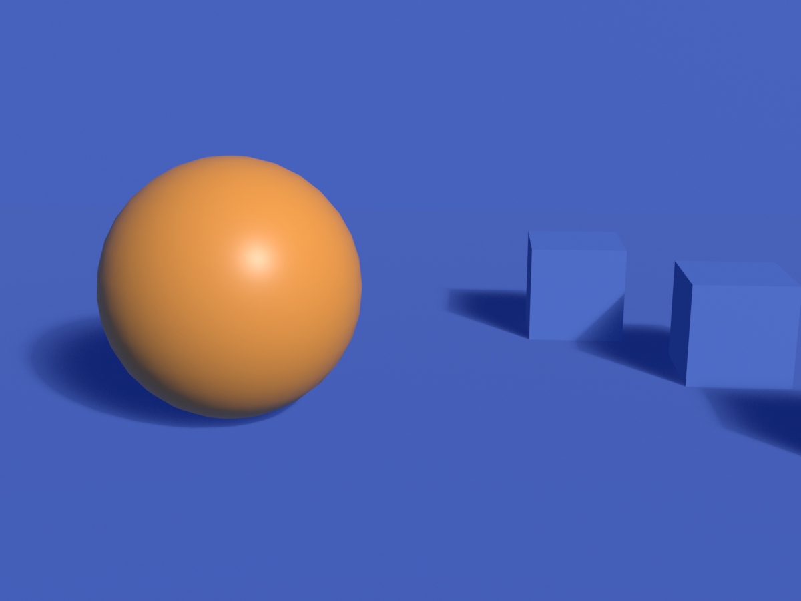
Color and Emotion
😊 Psychological Associations
Common color meanings (Western context):
- Red: Passion, danger, energy, love, anger, power
- Orange: Enthusiasm, creativity, warmth, friendliness
- Yellow: Happiness, optimism, caution, energy
- Green: Nature, growth, health, money, envy
- Blue: Trust, calm, sadness, professionalism, stability
- Purple: Royalty, luxury, mystery, spirituality
- Pink: Romance, femininity, innocence, playfulness
- Brown: Earth, reliability, comfort, simplicity
- Black: Sophistication, mystery, death, elegance
- White: Purity, cleanliness, innocence, simplicity
- Gray: Neutrality, professionalism, sophistication, sadness
Important notes:
- Cultural context matters (meanings vary globally)
- Saturation affects meaning (dark red vs. light pink)
- Context shapes interpretation (red rose vs. red blood)
- Combinations create new meanings
Color in Blender Composition
🔧 Practical Color Control
Planning color palette:
- Choose harmony scheme (complementary, analogous, etc.)
- Select 2-4 main colors
- Decide dominant vs. accent distribution
- Apply consistently across materials and lighting
Material color:
- Base Color in Principled BSDF
- Keep palette limited and intentional
- Use hue shift node for color variations
Lighting color:
- Light color dramatically affects mood
- Warm key light + cool fill = cinematic
- Match color temperature to time of day
- Sunrise/sunset = warm orange
- Overcast day = cool neutral
- Night = cool blue
World/background color:
- Sky color affects entire scene ambient
- HDRI brings realistic color environment
- Solid color background for product shots
- Gradient for more interest
Color grading in compositor:
- Post-process color adjustments
- Color Balance node for temperature shifts
- Hue/Saturation for selective color changes
- RGB Curves for precise color control
- Look Development for film-like color
✅ Color Composition Checklist
Verify your color choices:
- ✓ Is there a clear color harmony scheme (complementary, analogous, etc.)?
- ✓ Does color palette support the mood/emotion you want?
- ✓ Is there color contrast helping separate subject from background?
- ✓ Are accent colors directing attention to focal points?
- ✓ Is palette limited enough to feel unified (not chaotic)?
- ✓ Does color temperature contrast add depth (warm/cool split)?
- ✓ Are colors culturally appropriate for intended audience?
- ✓ Is saturation level appropriate (not overly saturated unless intentional)?
💡 Color is Emotional Shorthand: Color communicates faster than any other visual element. Before viewers consciously process shapes, composition, or content, they respond emotionally to color. A scene bathed in warm orange light feels inviting and comfortable before they even identify what's in it. A cold blue-gray palette creates unease immediately. This is why color grading is so crucial in film—it's the quickest way to manipulate audience emotion. As a 3D artist, you control every color in your scene—materials, lights, environment. This isn't just about making things look realistic or pretty. It's about emotional manipulation in the best sense—using color deliberately to make viewers feel exactly what you want them to feel. Choose colors the way a composer chooses notes, and your work will resonate on a visceral level.
🎭 Breaking the Rules
Now that you understand composition principles deeply, it's time to learn when and how to break them. The best artists know the rules so well that they can violate them effectively for specific creative purposes.
The Paradox of Rules
📜 Guidelines, Not Laws
Understanding composition "rules":
- Rules are guidelines based on what typically works
- Not absolute laws—more like grammar in language
- Can be broken when you understand why they exist
- Breaking rules without understanding = accident
- Breaking rules with understanding = art
The learning progression:
- Ignorance: Don't know rules, compositions feel random
- Rigidity: Learn rules, follow them religiously
- Understanding: Know WHY rules work
- Flexibility: Know when rules don't apply
- Mastery: Break rules intentionally for specific effects
The golden principle:
"Learn the rules like a pro, so you can break them like an artist." — Pablo Picasso
When to Break Composition Rules
✨ Valid Reasons for Rule-Breaking
1. To create intentional discomfort:
- Horror, thriller, psychological drama
- Want viewer to feel uneasy
- Techniques:
- Extreme imbalance (all weight one side)
- Dutch angles (tilted horizon)
- Centered horizon (breaks rule of thirds)
- Cutting off important elements
- Claustrophobic framing (no breathing room)
- Example: The Shining—symmetrical, centered compositions create uncanny feeling
2. To emphasize symmetry/perfection:
- Perfect symmetry can convey idealism, authority, artificiality
- Intentionally centered composition
- Use for:
- Religious or ceremonial subjects
- Authority figures
- Artificial or constructed environments
- Direct confrontation (character staring at camera)
- Example: Wes Anderson films—deliberate symmetry and center framing
3. To create minimalism:
- Isolating tiny subject in vast negative space
- Breaks typical compositional balance
- Emphasizes emptiness and isolation
- Use for:
- Loneliness, isolation themes
- Emphasizing scale (tiny person, huge environment)
- Minimalist aesthetic
- Meditation on space itself
4. To show chaos or confusion:
- Deliberately cluttered, unbalanced composition
- No clear focal point
- Competing elements
- Use for:
- Battle scenes, riots, crowds
- Character's mental breakdown
- Overwhelming situations
- Visual representation of chaos
5. To subvert expectations:
- Viewers expect certain compositions in certain contexts
- Breaking expectations creates surprise
- Can be humorous, shocking, or thought-provoking
- Example: Portrait with massive headroom (person tiny at bottom) = humor or insignificance
6. For stylistic consistency:
- Your artistic style might inherently break rules
- Consistency is more important than individual rules
- Develop signature approach
- Example: Artist who always centers subjects—becomes their style
How to Break Rules Effectively
🎨 Rule-Breaking Best Practices
Make it obvious and intentional:
- Subtle rule-breaking looks like mistake
- Exaggerate the violation
- If centering subject, make it perfectly centered
- If creating imbalance, make it extremely imbalanced
- Viewer should feel it's deliberate, not accidental
Have a clear reason:
- Don't break rules randomly or "just because"
- Ask: What am I trying to communicate?
- Does breaking this rule serve that purpose?
- If you can't articulate why, don't break it
Be consistent within the work:
- If breaking rules, do it throughout the piece
- One centered shot in series of thirds = mistake
- All shots centered = stylistic choice
- Consistency creates intentionality
Know your audience:
- Trained artists/photographers understand intentional rule-breaking
- General audiences might just see "bad composition"
- Context matters (fine art gallery vs. commercial work)
- Commercial work usually safer following rules
- Artistic work has more freedom
Master the rules first:
- Can't break what you don't understand
- Practice conventional composition extensively
- When rules become second nature, then experiment
- Picasso mastered realistic painting before creating Cubism
Examples of Effective Rule-Breaking
🎬 Case Studies
Centered compositions (breaking rule of thirds):
- Wes Anderson films: Symmetrical, centered frames convey control and artificiality
- Stanley Kubrick: Centered symmetry for authority and intimidation
- When it works: Creates formality, confrontation, or stylistic signature
Dutch angles (tilted camera):
- Film noir: Diagonal horizon creates unease and moral ambiguity
- Action scenes: Dynamic energy and chaos
- When it works: Tension, disorientation, instability needed
- When it fails: Overused (becomes cliché), no clear reason
Extreme negative space:
- Minimalist photography: Tiny subject, vast empty space
- When it works: Emphasizes isolation, scale, or meditation on emptiness
- Example: Small person on infinite beach—isolation and insignificance
Breaking the fourth wall:
- Character looking directly at camera
- Usually avoided (immersion-breaking)
- When it works: Comedy, direct audience address, meta-commentary
- Example: Deadpool films, Ferris Bueller
Chopped compositions:
- Cutting off important elements (faces, bodies)
- Breaks "don't cut at joints" rule
- When it works: Documentary realism, candid feel, focus on specific detail
- Fashion photography: Often crops faces to emphasize clothing
Rules That Are Rarely Broken
⚠️ Proceed with Extreme Caution
Some rules exist for good reasons and should almost never be broken:
1. Leading eye out of frame:
- Lines or gaze leading viewer out of image
- Breaks engagement, frustrates viewer
- Almost never works
- Exception: Intentional mystery (what's beyond frame?)
2. Horizon through middle (no rule of thirds):
- Bisects frame, creates boring split
- Static and uninteresting
- Even when centering other elements, move horizon
- Exception: Perfect reflection in water (intentional symmetry)
3. Tangent lines:
- Lines barely touching subjects (awkward)
- Pole "growing" from person's head
- Always looks like mistake
- Fix: Clearly separate or clearly intersect
4. Mergers:
- Background elements appearing to merge with subject
- Tree branch appearing as antlers
- Confusing spatial relationships
- Never intentional-looking
5. No focal point:
- Everything competing equally for attention
- Viewer doesn't know where to look
- Frustrating and unsatisfying
- Exception: Crystallographic patterns (deliberate all-over design)
Testing Rule-Breaking
🧪 Experimentation Process
Safe experimentation workflow:
- Create conventional version first:
- Compose following all rules
- Render or save this version
- This is your safety net
- Create rule-breaking version:
- Duplicate scene or camera
- Break specific rule intentionally
- Exaggerate the violation
- Compare side-by-side:
- Which better serves your intent?
- Does rule-breaking add meaning?
- Or does it just look wrong?
- Get feedback:
- Show both versions to others
- Ask which feels intentional
- If they think rule-breaking is mistake, it's not working
- Decide:
- Use rule-breaking if it clearly enhances intent
- Use conventional if rule-breaking is ambiguous
- When in doubt, follow rules
Questions to ask before breaking rules:
- What emotion or message am I trying to convey?
- Does this rule-break support that goal?
- Will my audience understand it's intentional?
- Am I breaking rules out of laziness or purpose?
- Does this enhance the work or just make it different?
- Can I articulate WHY I'm breaking this rule?
✅ Rule-Breaking Checklist
Before finalizing rule-breaking composition:
- ✓ Do I thoroughly understand the rule I'm breaking?
- ✓ Is the violation obvious and intentional-looking?
- ✓ Do I have a clear artistic reason (not just "being different")?
- ✓ Does it serve the emotional/narrative intent?
- ✓ Have I created a conventional version to compare?
- ✓ Is this consistent with other work in the series/project?
- ✓ Will my target audience understand it's intentional?
- ✓ Does the rule-breaking add something, not just subtract?
💡 Rules Are Training Wheels, Not Chains: Think of composition rules like learning to ride a bicycle. Training wheels help you develop balance, but eventually, you remove them. You don't remove them before you understand balance—that's called falling. And you don't keep them on forever—that's called never truly riding. The best cyclists don't think about balance anymore; it's automatic. Similarly, the best artists don't consciously think "rule of thirds" every time—they've internalized what makes compositions work. But they CAN break rules because they understand what they're breaking and why. The difference between a beginner's accidental rule-breaking and a master's intentional violation is understanding. Study the rules deeply, practice them extensively, then—and only then—earn the right to break them beautifully.
🎯 Project: Composition Gallery
Time to put all your composition knowledge into practice! In this project, you'll create a series of compositions demonstrating different principles. This will solidify your understanding and give you a portfolio showcasing your compositional mastery.
Project Overview
📋 What You'll Create
The challenge:
- Create ONE scene (can be simple)
- Set up 6 different camera angles/compositions
- Each demonstrates different composition principle
- Render all 6 and create comparison gallery
- Analyze what each composition achieves
Learning objectives:
- Apply multiple composition principles
- Understand how principles create different effects
- Develop composition intuition through comparison
- Build portfolio of compositional studies
- Practice camera work and scene composition
Time estimate:
- Scene setup: 15-20 minutes
- 6 compositions: 30-40 minutes
- Rendering and analysis: 20-30 minutes
- Total: 65-90 minutes
Step 1: Scene Setup
🏗️ Build Your Stage
Keep it simple—focus on composition, not modeling:
Option A: Interior scene (recommended):
- Simple room (walls, floor, ceiling from cubes)
- Window or doorway (creates framing opportunity)
- Main subject: Character (Suzanne), chair, or product
- 2-3 furniture pieces (tables, shelves—simple shapes)
- Some foreground elements (plants, objects for depth)
Option B: Exterior scene:
- Ground plane
- Main subject at origin
- 2-3 trees or architectural elements
- Background elements (distant buildings, mountains)
- Sky with HDRI or gradient
Option C: Product scene:
- Product on pedestal/table
- Backdrop with interesting shape
- Foreground framing elements
- Some small accent objects
- Studio or environmental lighting
Essential elements for any scene:
- Clear subject: Main focal point
- Foreground elements: For depth and framing
- Background context: Environment or backdrop
- Compositional opportunities: Leading lines, frames, visual interest
- Good lighting: 3-point or simple setup
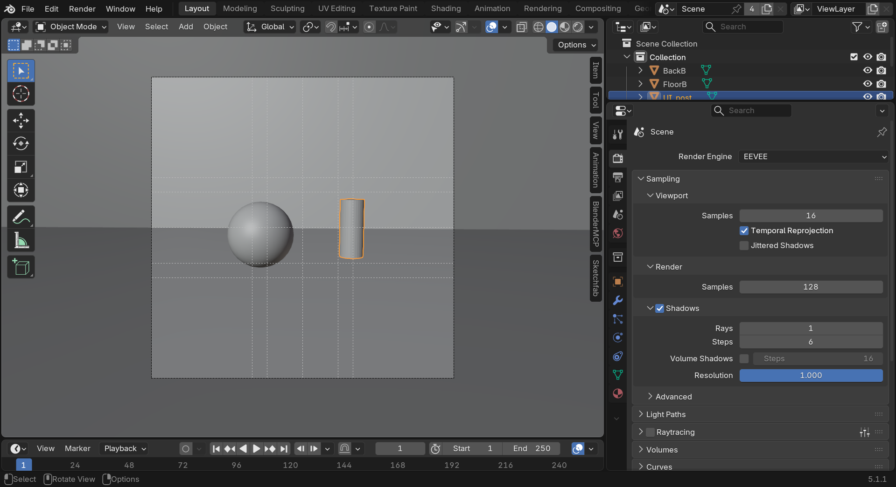
Step 2: Six Compositions
📷 Camera Setups
Composition 1: Rule of Thirds
- Principle: Classic asymmetrical balance
- Setup:
- Enable "Rule of Thirds" composition guide
- Place subject on intersection point
- If horizon visible, place on top or bottom third
- Leave looking/lead room appropriately
- Goal: Professional, balanced, dynamic composition
- Name camera: "CAM_01_RuleOfThirds"
Composition 2: Symmetry
- Principle: Perfect bilateral symmetry
- Setup:
- Center camera perfectly on subject
- Enable "Center" composition guide
- Subject facing camera directly
- Equal elements left and right if possible
- Goal: Formal, authoritative, balanced feeling
- Name camera: "CAM_02_Symmetry"
Composition 3: Leading Lines
- Principle: Lines guide eye to subject
- Setup:
- Position camera to emphasize lines (path, edges, beams)
- Lines should start from foreground/corners
- Converge on or lead to subject
- Use perspective to enhance line effect
- Goal: Strong directional flow, emphasis on journey
- Name camera: "CAM_03_LeadingLines"
Composition 4: Framing
- Principle: Frame within frame
- Setup:
- Position camera to shoot through opening (door, window, arch)
- Or use foreground elements as frame (branches, objects)
- Subject visible within natural frame
- Can blur foreground frame slightly
- Goal: Depth, context, guided attention
- Name camera: "CAM_04_Framing"
Composition 5: Depth and Layers
- Principle: Clear foreground, middle, background separation
- Setup:
- Include elements at three distinct depths
- Use overlapping to show depth
- Enable camera depth of field
- Focus on middle ground subject
- Blur foreground and/or background
- Goal: Maximum dimensional feel, professional look
- Name camera: "CAM_05_Depth"
Composition 6: Creative/Rule-Breaking
- Principle: Intentional rule violation
- Setup ideas:
- Extreme negative space (tiny subject, vast emptiness)
- Dutch angle (tilted horizon)
- Extreme high or low angle
- Unconventional framing (cut off important elements)
- Color accent (one saturated element in desaturated scene)
- Goal: Show you understand rules enough to break them
- Name camera: "CAM_06_Creative"
Step 3: Optimization and Polish
✨ Refinement
For each composition:
- Check composition guides:
- View through camera (
Numpad 0) - Verify principle is clearly demonstrated
- Adjust camera position if needed
- View through camera (
- Check lighting:
- Subject well-lit and visible
- Depth separation through lighting
- Mood appropriate
- Check depth of field (if used):
- Focus distance correct
- Blur amount appropriate
- Subject sharp, others appropriately blurred
- Test render:
- Small resolution quick test
- Verify composition reads clearly
- Adjust if principle not obvious
Step 4: Render Gallery
🖼️ Create Comparison
Render each composition:
- Set render resolution (1920x1080 recommended)
- Choose render engine (Eevee for speed, Cycles for quality)
- Set samples (128-256 Eevee, 256-512 Cycles)
- For each camera:
- Make camera active
- Render (
F12) - Save image with descriptive name
- Example: "01_RuleOfThirds.png"
Create comparison layout:
- Option A: External image editor
- Create 2x3 grid layout
- Import all 6 renders
- Add text labels identifying each principle
- Add your name and "Composition Study"
- Option B: Blender compositor (advanced)
- Use compositor to arrange renders
- Add text overlays
- Output single comparison image
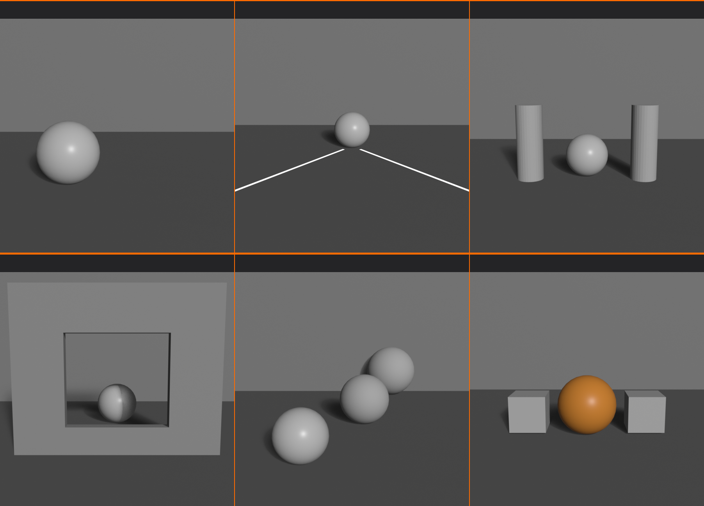
Step 5: Analysis
📝 Reflection and Documentation
For each composition, write brief analysis:
- Composition 1 (Rule of Thirds):
- What feeling does this create?
- How does asymmetry affect balance?
- Where does your eye go first?
- Composition 2 (Symmetry):
- How does it feel compared to #1?
- Does it feel formal or static?
- What mood does symmetry create?
- Composition 3 (Leading Lines):
- Do lines successfully lead to subject?
- What journey does eye take?
- Does it create sense of depth?
- Composition 4 (Framing):
- Does frame direct attention?
- How does depth change?
- What context does frame provide?
- Composition 5 (Depth):
- Can you clearly see three layers?
- Does it feel dimensional?
- How does DoF affect perception?
- Composition 6 (Creative):
- What rule did you break?
- Why did you break it?
- Does it look intentional?
- What feeling does it create?
Overall reflection:
- Which composition is most effective? Why?
- Which was hardest to create?
- What surprised you about the differences?
- Which principle will you use most?
Success Checklist
✅ Project Completion Criteria
You've successfully completed when:
- ✓ Created scene with clear subject and compositional elements
- ✓ Set up 6 cameras demonstrating different principles
- ✓ Each principle is clearly visible in composition
- ✓ Named all cameras descriptively
- ✓ Rendered all 6 compositions
- ✓ Created comparison gallery or layout
- ✓ Can clearly see differences between approaches
- ✓ Written brief analysis of each composition
- ✓ Identified which principle works best for this scene
- ✓ Understand how each principle creates different effect
Bonus Challenges
🌟 Advanced Extensions
Take your composition study further:
Challenge 1: Color Studies
- Create 3 additional renders with different color schemes
- Complementary, analogous, monochromatic
- Compare how color affects same composition
Challenge 2: Focal Length Comparison
- Take ONE composition (rule of thirds)
- Render at 24mm, 50mm, 85mm, 135mm
- Maintain similar framing by adjusting camera distance
- Analyze perspective differences
Challenge 3: Lighting Studies
- Same composition, 4 different lighting setups
- Key light only, 3-point, dramatic side light, silhouette
- How does lighting change compositional feel?
Challenge 4: Master Study Recreation
- Find famous painting or photograph
- Analyze its composition
- Recreate composition in 3D
- Match angle, framing, principles used
Challenge 5: Sequential Narrative
- Create 6 compositions that tell a story
- Each uses different principle
- Compositions progress through narrative
- Film storyboard approach
💡 The Composition Portfolio: This project isn't just an exercise—it's the foundation of your compositional understanding. Save this .blend file and these renders. Years from now, when you're working on professional projects, you'll reference these studies. "How should I frame this product shot? Let me check my composition studies—oh right, rule of thirds with leading lines works great." The principles you're practicing here apply to every single image you'll ever create. This isn't homework; it's building your visual library. Master artists have sketchbooks full of composition studies—this is your digital equivalent. Treat it with the respect it deserves, because you'll use these lessons for your entire career.
📚 Lesson Summary
Congratulations! You've completed an intensive journey through composition principles—the invisible architecture that makes great images work. Let's consolidate what you've learned and look ahead to your continued growth.
Key Takeaways
🎯 Core Composition Principles Mastered
Fundamental Understanding:
- Composition is the deliberate arrangement of visual elements within a frame
- It guides attention, creates hierarchy, establishes mood, and communicates meaning
- Good composition is felt, not seen—invisible scaffolding for visual impact
- Based on human perception, not arbitrary rules
- Applies universally across all visual arts
Rule of Thirds:
- Divide frame into 9 equal rectangles (3x3 grid)
- Place subjects on intersection points or grid lines
- Creates dynamic, professional compositions
- Avoids static centered framing
- Foundation principle—learn this first
Golden Ratio:
- Mathematical proportion (φ ≈ 1.618) found in nature
- Golden spiral guides eye naturally through composition
- Phi grid more refined than rule of thirds (38.2% / 61.8%)
- Creates classical, timeless aesthetic
- Used in fine art and high-end imagery
Visual Weight and Balance:
- Visual weight = perceived prominence of elements
- Affected by size, color, contrast, detail, position, sharpness
- Symmetrical balance = formal, stable
- Asymmetrical balance = dynamic, modern
- Intentional imbalance creates tension
Leading Lines:
- Lines guide viewer's eye through composition
- Horizontal = calm, vertical = power, diagonal = dynamic
- Curved = organic, zigzag = tension
- Should lead TO focal point, not away from frame
- Creates depth and visual journey
Framing Within Frames:
- Use scene elements to frame subject
- Doorways, windows, arches, branches, shadows
- Directs attention and adds depth
- Provides context and visual interest
- Professional, sophisticated technique
Symmetry vs Asymmetry:
- Symmetry = formal, authoritative, classical
- Asymmetry = dynamic, natural, contemporary
- Choose based on message and mood
- Can combine for hybrid approach
- Intentional symmetry breaking creates focal points
Depth and Layering:
- Three planes: foreground, middle ground, background
- Techniques: overlapping, size variation, atmospheric perspective, detail gradient, depth of field
- Transforms flat 2D screen into dimensional space
- Essential for professional 3D work
- Combine multiple depth cues for strongest effect
Color in Composition:
- Color attracts attention, creates weight, establishes mood
- Harmony schemes: complementary, analogous, monochromatic, triadic
- Warm colors advance, cool colors recede
- Warm/cool split creates depth and separation
- Color accent in neutral scene = powerful focal point
Breaking Rules:
- Rules are guidelines, not laws
- Master rules before breaking them
- Break intentionally with clear artistic reason
- Make violations obvious, not accidental-looking
- Some rules (tangent lines, no focal point) rarely worth breaking
The Composition Mindset
🧠 Thinking Like a Composer
Key mental shifts:
- From random to intentional:
- Every element placed for a reason
- Nothing accidental in frame
- Conscious choices about what to include/exclude
- From subject-focused to frame-aware:
- Consider entire frame, not just subject
- Negative space as important as positive
- Background and edges matter
- From technical to emotional:
- Ask "What do I want viewer to feel?"
- Use composition to evoke emotion
- Technical excellence serves emotional impact
- From isolated to contextual:
- How do elements relate to each other?
- What story does arrangement tell?
- Spatial relationships create meaning
- From copying to creating:
- Use references for inspiration, not templates
- Understand WHY compositions work
- Develop your own compositional voice
Composition Decision Framework
🎯 Systematic Approach to Framing
Ask yourself these questions for every composition:
1. What's the subject?
- Clear focal point identified?
- Primary and secondary subjects defined?
- Visual hierarchy established?
2. What's the emotion/message?
- What should viewer feel?
- Calm, energetic, tense, powerful, intimate?
- What story am I telling?
3. Which compositional approach?
- Rule of thirds or golden ratio?
- Symmetry or asymmetry?
- Centered or off-center?
4. How to guide the eye?
- What leading lines exist or can be created?
- Where should eye enter frame?
- What's the visual journey?
5. How to create depth?
- What's in foreground, middle, background?
- Is depth of field needed?
- How to separate layers?
6. How to use color?
- What color palette supports mood?
- Where to use accent colors?
- Warm/cool temperature split?
7. What's the balance?
- Visual weight distributed appropriately?
- Intentional balance or tension?
- Negative space working?
8. Should I break any rules?
- Clear artistic reason?
- Will it look intentional?
- Does it enhance message?
Quick Reference Guide
⚡ Composition Cheat Sheet
Common scenarios and best approaches:
| Scenario | Best Composition Approach |
|---|---|
| Product visualization | Rule of thirds, clean negative space, complementary colors |
| Character portrait | Eyes on top third, looking room, golden ratio, depth of field |
| Landscape/environment | Horizon on thirds, leading lines, depth layers, atmospheric perspective |
| Architecture | Symmetry or strong leading lines, rule of thirds for details |
| Action/movement | Diagonal lines, lead room, asymmetry, dynamic angles |
| Interior space | Framing (doorways), depth layers, leading lines (floor tiles) |
| Horror/tension | Intentional imbalance, Dutch angles, extreme negative space |
| Formal/corporate | Symmetry, centered framing, balanced composition |
| Minimalist | Extreme negative space, monochromatic color, simple forms |
Practice and Development
🎓 Continuing Your Journey
Daily practice exercises:
- Photo analysis (10 minutes):
- Find one professional photo or painting
- Identify composition principles used
- Note what makes it effective
- Builds visual vocabulary
- Thumbnail sketching (15 minutes):
- Draw 5-10 small composition thumbnails
- Don't worry about detail—just shapes and arrangement
- Try different principles
- Fastest way to explore ideas
- One-camera challenge (20 minutes):
- Open Blender scene
- Try 5 different camera angles
- Each emphasizing different principle
- Builds intuition through repetition
Weekly challenges:
- Composition recreation: Recreate famous painting/photo composition in 3D
- Principle focus: Create 5 images using only one principle (all leading lines, all symmetry, etc.)
- Color study: Same composition, 5 different color schemes
- Before/after: Take mediocre composition, improve it using principles
Resources for continued learning:
- Study masters:
- Painting: Caravaggio, Rembrandt, Vermeer (lighting and composition)
- Photography: Ansel Adams, Henri Cartier-Bresson, Steve McCurry
- Film: Roger Deakins, Emmanuel Lubezki (cinematographers)
- Books:
- "The Photographer's Eye" by Michael Freeman
- "Picture This" by Molly Bang
- "Framed Ink" by Marcos Mateu-Mestre
- Active viewing:
- Watch movies with compositional awareness
- Pause on shots that feel "right"
- Analyze why they work
Your Composition Journey
🗺️ Next Steps
Principles
This Lesson] --> B[Depth of Field
Lesson 22] A --> C[Camera Animation
Lesson 23] B --> D[Advanced
Techniques] C --> D D --> E[Professional
Portfolio] style A fill:#4CAF50,stroke:#333,stroke-width:2px,color:#fff style B fill:#667eea,stroke:#333,stroke-width:2px,color:#fff style C fill:#667eea,stroke:#333,stroke-width:2px,color:#fff style D fill:#764ba2,stroke:#333,stroke-width:2px,color:#fff style E fill:#ff9800,stroke:#333,stroke-width:2px,color:#fff
Immediate next lessons:
- Lesson 22: Depth of Field and Focus – Control sharpness for depth separation
- Lesson 23: Camera Animation – Dynamic compositions that move
Related skills to develop:
- Color grading and post-processing
- Lighting design (supports composition)
- Storytelling and visual narrative
- Film language and editing principles
Your progression path:
- Beginner: Follow rules religiously (where you are now)
- Intermediate: Combine principles fluidly
- Advanced: Break rules intentionally
- Master: Develop signature style
Final Thoughts
🎨 You're Now a Visual Storyteller
Composition is the difference between taking pictures and making art. Anyone can point a camera (real or virtual) at a subject and capture it. But understanding composition means you're making deliberate choices about how viewers experience your work.
Every principle you've learned—rule of thirds, leading lines, depth layering, color harmony—these aren't arbitrary rules invented by academics. They're observations about how human perception works, refined over centuries of artistic practice. When you apply the golden ratio, you're using the same proportions that appear in nature and have pleased human eyes for millennia. When you use leading lines, you're guiding attention the same way great painters have for centuries.
The beautiful thing about composition is that it's both science and art. There are principles you can learn systematically (which you just did), but applying them requires artistic judgment that develops through practice. You now have the vocabulary and the framework. With practice, these principles will become intuitive—you'll compose great shots without consciously thinking through the rules.
Remember: composition is not about making pretty pictures. It's about communication. Every compositional choice should serve your message. Symmetry communicates authority. Asymmetry communicates energy. Negative space communicates isolation. Color communicates emotion. You're not just arranging elements—you're crafting experiences.
Go forth and compose with confidence. Your 3D scenes now have the potential for visual sophistication that rivals professional photography and film. The technical skill is just the beginning—composition is where artistry lives.
💡 The Composition Secret: Here's what separates good 3D artists from great ones—it's rarely about modeling skill, rendering quality, or software mastery. Those are table stakes. The real differentiator is composition. Two artists can use the same assets, same lighting, same render engine, but one creates images people scroll past while the other creates images people save and share. The difference? Composition. You've now learned what most 3D artists never study systematically. You understand the visual language that makes images work. This knowledge will serve you for your entire career, across every project, in every style. Composition is the most transferable skill in visual arts—master it once, benefit forever. You've taken the first major steps on that journey. Keep practicing, keep analyzing, keep composing. Your best work is ahead of you.